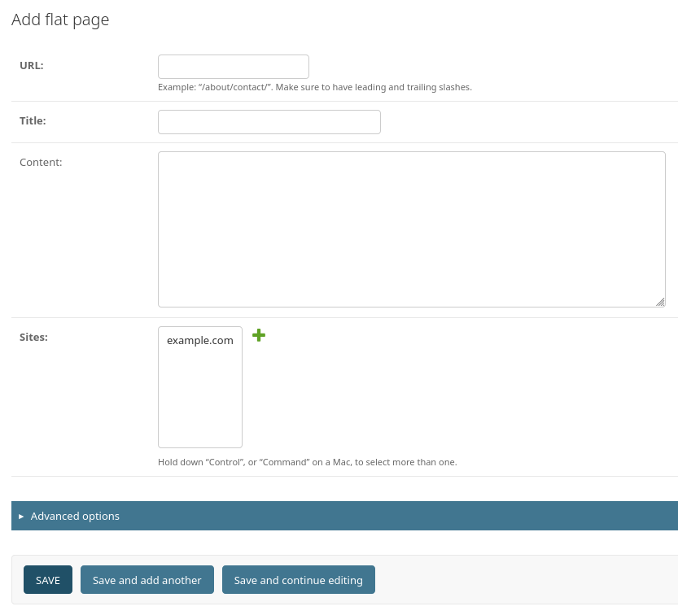

Django のパワフルな特徴の1つは、自動的に生成される admin インタフェースです。あなたのモデルクラスからメタデータを読み取り、モデル中心のインタフェースを提供します。このインタフェースのおかげで、ユーザはあなたのサイトのコンテンツを操作できます。admin サイトのオススメの使い方は、組織内で利用する管理ツールに利用を制限することです。admin サイトは、あなたのサイトのフロントエンドやその周辺を含んだ全体を作成することを意図していません。
admin サイトは、カスタマイゼーションのためのたくさんのフックを持っています。しかしそれらのフックを使う際には気をつけてください。もしあなたが、データベースのテーブルとフィールドを使用しないような、よりプロセス中心のインタフェースを提供する必要があるなら、おそらく自分でビューを書いたほうが良いでしょう。
このドキュメントでは、Django の admin インタフェースを有効にして使用したりカスタマイズする方法について説明します。
admin サイトは startproject で使用されるデフォルトのプロジェクトテンプレートで有効になります。
デフォルトのプロジェクトテンプレートを使用していない場合、要件は以下の通りです:
'django.contrib.admin' とその依存関係である django.contrib.auth, django.contrib.contenttypes, django.contrib.messages, および django.contrib.sessions を、 INSTALLED_APPS 設定に追加してください。
DjangoTemplates バックエンドを、TEMPLATES 設定で構成し、django.template.context_processors.request, django.contrib.auth.context_processors.auth, および django.contrib.messages.context_processors.messages を OPTIONS の 'context_processors' オプションに含めてください。
MIDDLEWARE 設定をカスタマイズしている場合、django.contrib.sessions.middleware.SessionMiddleware、django.contrib.auth.middleware.AuthenticationMiddleware、および django.contrib.messages.middleware.MessageMiddleware を含める必要があります。
これらのステップを踏んだ後、フックしたURL (デフォルトでは /admin/) を訪れることで、管理サイトを使用できるようになります。
ログイン用のユーザーを作成する必要がある場合は、createsuperuser コマンドを使用してください。デフォルトでは、管理サイトにログインするにはユーザーの is_staff 属性が True に設定されている必要があります。
最後に、アプリケーションのモデルのうちどれが管理インターフェースで編集可能であるべきかを決定します。それらのモデルごとに、ModelAdmin に記述されているように、管理サイトに登録します。
参考
本番環境での admin と関連する静的ファイル (画像、JavaScript、CSS) の配信について知りたい場合は、ファイルを配信する を参照してください。
問題が解決しない場合は、FAQ: 管理インタフェース を参照してみてください。
ModelAdmin のオブジェクト¶ModelAdmin クラスは、admin インターフェース内でモデルを表現する方法です。通常、アプリケーション内の admin.py に記述されます。ModelAdmin の例を見てみましょう:
from django.contrib import admin
from myapp.models import Author
class AuthorAdmin(admin.ModelAdmin):
pass
admin.site.register(Author, AuthorAdmin)
いつでも ModelAdmin オブジェクトが必要なのか?
上記の例では、ModelAdminクラスはカスタム値を（まだ）定義していません。その結果、デフォルトの管理インターフェースが提供されます。デフォルトのadminインターフェースに満足している場合は、ModelAdminオブジェクトを定義する必要はまったくありません。ModelAdminの記述をせずにモデルクラスを登録できます。上記の例は、次のように簡略化できます。
from django.contrib import admin
from myapp.models import Author
admin.site.register(Author)
register デコレータ¶ModelAdmin を登録するために、デレコータも用意されています:
from django.contrib import admin
from .models import Author
@admin.register(Author)
class AuthorAdmin(admin.ModelAdmin):
pass
1 つ以上のモデルが与えられ、 ModelAdmin に登録されます。カスタムの AdminSite を使用している場合、site キーワード引数を使って渡してください:
from django.contrib import admin
from .models import Author, Editor, Reader
from myproject.admin_site import custom_admin_site
@admin.register(Author, Reader, Editor, site=custom_admin_site)
class PersonAdmin(admin.ModelAdmin):
pass
このデコレータは、model admin クラスをその __init__() メソッド内で参照する必要がある場合（例： super(PersonAdmin, self).__init__(*args, **kwargs) ）には使用できません。代わりに super().__init__(*args, **kwargs) のようにします。
INSTALLED_APPS 設定内に 'django.contrib.admin' を記述すると、Django は自動的に各アプリケーション内で admin モジュールを探してインポートします。
これは、admin に対するデフォルトの AppConfig クラスです。Django が開始すると autodiscover() を呼び出します。
このクラスは AdminConfig と同じように動作しますが、autodiscover() を呼び出しません。
これはデフォルトの admin サイトのクラスやサイトインスタンスを返す呼び出し可能オブジェクトへのドット区切りのインポートパスです。デフォルトは 'django.contrib.admin.sites.AdminSite' です。使い方は デフォルトの admin サイトをオーバーライドする を参照してください。
この関数は、インストールされた各アプリケーション内で admin モジュールをインポートするよう試みます。これらのモジュールは admin にモデルが登録されているものと想定されます。
通常、この機能を手動で呼び出す必要はありません。Django が開始するとき AdminConfig が呼び出してくれます。
カスタム AdminSite を使用している場合、通常はすべての ModelAdmin サブクラスをコードにインポートし、それらをカスタム AdminSite に登録します。その場合、自動検出を無効にするには、INSTALLED_APPS 設定で 'django.contrib.admin' の代わりに 'django.contrib.admin.apps.SimpleAdminConfig' を指定する必要があります。
ModelAdmin のオプション¶ModelAdmin は非常に柔軟にできています。インターフェイスをカスタマイズするために、様々なオプションが用意されています。すべてのプションは ModelAdmin サブクラスで定義します:
from django.contrib import admin
class AuthorAdmin(admin.ModelAdmin):
date_hierarchy = "pub_date"
ページ上のどこにアクションバーが表示されかをコントロールします。デフォルトでは、admin チェンジリストはページのトップにアクションを表示します (actions_on_top = True; actions_on_bottom = False)。
アクションのドロップダウンの隣に選択用カウンターを表示するかどうかをコントロールします。デフォルトでは、admin チェンジリストは表示するようになっています (actions_selection_counter = True)。
date_hierarchy をモデル内の DateField か DateTimeField の名前にセットすると、チェンジリストのページがそのフィールドによる日付ベースのドリルダウンナビゲーションを含むようになります。
実装例:
date_hierarchy = "pub_date"
__ ルックアップを使用して、関連するモデルのフィールドを指定することもできます。たとえば:
date_hierarchy = "author__pub_date"
この機能は、有効なデータに基づいて、適切に変化させます。たとえば、すべての日付が 1 月に収まっている場合、日のドリルダウンのみを表示します。
注釈
date_hierarchy は内部的に QuerySet.datetimes() を使用します。タイムゾーンサポートが有効 (USE_TZ = True) な際に注意すべき点について、ドキュメントを参照してください。
この属性は、空(None、空の文字列、等)のレコードのフィールドに対するデフォルトの表示値をオーバーライドします。デフォルト値は - (ダッシュ)です。たとえば:
from django.contrib import admin
class AuthorAdmin(admin.ModelAdmin):
empty_value_display = "-empty-"
AdminSite.empty_value_display ですべての admin ページもしくは特定のフィールドに対して empty_value_display をオーバーライドすることもできます:
from django.contrib import admin
class AuthorAdmin(admin.ModelAdmin):
list_display = ["name", "title", "view_birth_date"]
@admin.display(empty_value="???")
def view_birth_date(self, obj):
return obj.birth_date
この属性を使用する場合、フォームから除外するフィールドの名称をリストで指定します。
たとえば、以下のモデルを考えてみましょう:
from django.db import models
class Author(models.Model):
name = models.CharField(max_length=100)
title = models.CharField(max_length=3)
birth_date = models.DateField(blank=True, null=True)
Author モデルに対するフォームが name と title の 2 つのフィールドのみを含むようにしたい場合、以下のように fields か exclude を指定することになります:
from django.contrib import admin
class AuthorAdmin(admin.ModelAdmin):
fields = ["name", "title"]
class AuthorAdmin(admin.ModelAdmin):
exclude = ["birth_date"]
Author モデルが 3 つのフィールド (name、title、birth_date) しか持っていないので、上記の宣言によって生成されるフォームはまったく同じフィールドを持つことになります。
"add" と "change" 上のフォームでシンプルなレイアウト変更 (有効なフィールドのみ表示、順序の変更、行のグルーピングなど) を行うには、fields オプションを使用してください。たとえば、以下のように、django.contrib.flatpages.models.FlatPage モデルに対して admin フォームのよりシンプルなバージョンを定義できます。
class FlatPageAdmin(admin.ModelAdmin):
fields = ["url", "title", "content"]
上記の例では、指定したフィールド (url、title、content) だけが (結果として) フォーム上で表示されます。fields は ModelAdmin.readonly_fields で定義される値を持つことができ、読み取り専用で表示されます。
より複雑なレイアウトを作るには、fieldsets オプションを参照してください。
fields オプションは、list_display と同じタイプの値を受け付けますが、呼び出し可能オブジェクトや関連フィールドの __ ルックアップは受け付けません。モデルおよびモデル管理クラスのメソッド名は、readonly_fields にリストされている場合にのみ使用されます。
1 つの行に複数のフィールドを表示するには、タプルで囲んでください。この例では、url と title フィールドが同じ行に表示され、content フィールドは次の行に表示されます:
class FlatPageAdmin(admin.ModelAdmin):
fields = [("url", "title"), "content"]
ModelAdmin.fieldsets オプションとの混同の可能性
この fields オプションと、次のセクションで説明する fieldsets における fields ディクショナリキーは別物です。
fields と fieldsets オプションのどちらも存在しない場合、Django はデフォルトで AutoField と editable=True 以外の各フィールドを、単一のフィールドセットで、モデル内でフィールドが定義されたとおりの順番で表示します。
admin の "add" と "change" ページのレイアウトをコントロールするには、fieldsets をセットしてください。
fieldsets は、2 値タプルのリストで、各 2 値タプルは admin フォームページの <fieldset> を表します。 (<fieldset> はフォームの "section" です。)
2 値タプルのフォーマットは (name, field_options) で、name はフィールドセットのタイトル文字列を表し、field_options フィールドセットに関する情報のディクショナリで、表示するフィールドのリストを含みます。
django.contrib.flatpages.models.FlatPage モデルを用いた例は以下のようになります。
from django.contrib import admin
class FlatPageAdmin(admin.ModelAdmin):
fieldsets = [
(
None,
{
"fields": ["url", "title", "content", "sites"],
},
),
(
"Advanced options",
{
"classes": ["collapse"],
"fields": ["registration_required", "template_name"],
},
),
]
これにより、admin ページは以下のような見た目となります:
fieldsets と fields オプションのどちらも存在しない場合、Django はデフォルトで AutoField と editable=True 以外の各フィールドを、単一のフィールドセットで、モデル内でフィールドが定義されたとおりの順番で表示します。
field_options ディクショナリは以下のキーを持つことができます:
fieldsフィールドセット内に表示するフィールド名のリストまたはタプルです。このキーは必須です。
実装例:
{
"fields": ["first_name", "last_name", "address", "city", "state"],
}
fields オプションと同様に、複数のフィールドを 1 行に表示するにはタプルでこれらのフィールドを囲んでください。この例では、first_name と last_name フィールドが 1 つの行に表示されます。
{
"fields": [("first_name", "last_name"), "address", "city", "state"],
}
fields は ModelAdmin.readonly_fields で定義される値を持つことができ、読み取り専用で表示されます。
fields に呼び出し可能オブジェクトの名前を追加した場合、fields オプションと同じルールが適用されます: 呼び出し可能オブジェクトは readonly_fields 内でリスト化される必要があります。
classesフィールドセットに適用する追加のCSSクラスを含むリストまたはタプルです。これには、プロジェクト内で定義されたカスタムCSSクラスや、Djangoが提供するCSSクラスを含めることができます。デフォルトの管理サイトのCSSスタイルシート内では、特に役立つ2つのクラス、collapse と wide が定義されています。
実装例:
{
"classes": ["wide", "collapse"],
}
wide スタイルが適用されたフィールドセットは、管理インターフェースで追加の横幅が与えられます。collapse スタイルが適用された名前付きフィールドセットは、初期状態で折りたたまれ、表示/非表示を切り替えるための展開可能なウィジェットが使用されます。
collapse クラスを使用する fieldsets は、name が定義されている場合、<details> および <summary> 要素を使用するようになりました。
description各フィールドセットの見出しの下に表示されるオプションの追加テキストの文字列です。
この値は、管理インターフェイスに表示されるときにはHTMLエスケープされないことに注意してください。これにより、HTML を含めることができます。あるいは、プレーンテキストと django.utils.html.escape() を使って HTML の特殊文字をエスケープすることもできます。
TabularInline は fieldsets の機能の一部しか利用できません
TabularInline で fieldsets を使用する際は、機能が制限されています。TabularInline レイアウト内で表示するフィールドとその順序を指定するには、field_options 辞書内で fields を定義する必要があります。
その他のすべての機能はサポートされていません。これには、フィールドのグループにタイトルを定義するための name の使用が含まれます。
デフォルトでは、ManyToManyField は <select multiple> で admin サイトで表示されます。複数選択のボックスは、たくさんのアイテムを選択するには不向きです。ManyToManyField をこのリストに加えると、代わりにかっこよくて控えめな JavaScript の "filter" インターフェースを使用します。非選択および選択済みのオプションは 2 つのボックスに並べて表示されます。垂直方向のインターフェースを使用するには filter_vertical を参照してください。
filter_horizontal と同じですが、フィルタインターフェイスを垂直方向に表示し、非選択のオプションは選択済みのオプションの上部に表示されます。
デフォルトではモデルに対して ModelForm が動的に生成されます。追加と変更の両方のページで使用されるフォームです。独自の ModelForm を定義すれば、追加と変更のページでフォームの挙動を簡単にオーバーライドできます。あるいは、まったく新しいモデルフォームを作る代わりに、ModelAdmin.get_form() メソッドを使ってデフォルトのフォームをカスタムすることもできます。
例については カスタムのバリデーションを admin に追加する を参照してください。
ModelAdmin.exclude が優先されます
ModelForm と ModelAdmin の両方で exclude オプションが定義されている場合、ModelAdmin は優先順位に従います。
from django import forms
from django.contrib import admin
from myapp.models import Person
class PersonForm(forms.ModelForm):
class Meta:
model = Person
exclude = ["name"]
class PersonAdmin(admin.ModelAdmin):
exclude = ["age"]
form = PersonForm
この例では、生成されるフォームで "age" フィールドは除外されますが "name" フィールドは含まれます。
admin 内で使用するための Field のうちある程度の部分をオーバーライドする簡単 (だけど汚い) 方法を提供します。formfield_overrides はディクショナリで、フィールドクラスの構成時にフィールドに渡す引数のディクショナリをマッピングします。
これでは抽象的すぎるので、具体的な例を見てみましょう。formfield_overrides のもっとも一般的な使い道は、特定のタイプのフィールドに対してカスタムしたウィジェットを追加することです。大きなテキストフィールドを使用するために、デフォルトの <textarea> の代わりに RichTextEditorWidget を使いたいとしましょう。この場合、以下のように記述します。
from django.contrib import admin
from django.db import models
# Import our custom widget and our model from where they're defined
from myapp.models import MyModel
from myapp.widgets import RichTextEditorWidget
class MyModelAdmin(admin.ModelAdmin):
formfield_overrides = {
models.TextField: {"widget": RichTextEditorWidget},
}
ディクショナリ内のキーは文字列 ではなく 実際のフィールドクラスである点に注意してください。値は別のディクショナリです; これらの引数はフォームフィールドの __init__() メソッドに渡されます。詳細は フォーム API を参照してください。
警告
リレーションフィールド (例えば ForeignKey や ManyToManyField) でカスタムウィジェットを使用したいときは、, raw_id_fields、radio_fields、autocomplete_fields にそのフィールドの名前を含まないようにしてください。
formfield_overrides は、raw_id_fields、radio_fields、autocomplete_fields のどれかがセットされたリレーションフィールドのウィジェットは変更しません。これは、raw_id_fields、radio_fields、autocomplete_fields の 3 つがこれら自身のカスタムウィジェットを暗示するからです。
後述の InlineModelAdmin オブジェクトと ModelAdmin.get_formsets_with_inlines() を参照してください。
admin のチェンジリストページでどのフィールドを表示するかコントロールするために、list_display をセットします。
実装例:
list_display = ["first_name", "last_name"]
list_display をセットしない場合、admin サイトは各オブジェクトの __str__() 表現を表示する単一の列を表示します。
list_display で使用できる値は5種類あります。最も簡単なもの以外は、フィールドの表示方法をカスタマイズするために display() デコレーターを使用できます。
モデルフィールドの名前。次に例を示します。
class PersonAdmin(admin.ModelAdmin):
list_display = ["first_name", "last_name"]
リレーション先フィールドの名前を __ 表記で記述します。例えば、次のようにします。
class PersonAdmin(admin.ModelAdmin):
list_display = ["city__name"]
1 つの引数 (モデルのインスタンス) を受け入れる呼び出し可能オブジェクトです。次に例を示します。
@admin.display(description="Name")
def upper_case_name(obj):
return f"{obj.first_name} {obj.last_name}".upper()
class PersonAdmin(admin.ModelAdmin):
list_display = [upper_case_name]
1 つの引数 (モデルのインスタンス) を受け入れる ModelAdmin メソッドを表す文字列です。次に例を示します。
class PersonAdmin(admin.ModelAdmin):
list_display = ["upper_case_name"]
@admin.display(description="Name")
def upper_case_name(self, obj):
return f"{obj.first_name} {obj.last_name}".upper()
モデルの属性や (必須の引数を持たない) メソッドを表す文字列です。次に例を示します。
from django.contrib import admin
from django.db import models
class Person(models.Model):
name = models.CharField(max_length=50)
birthday = models.DateField()
@admin.display(description="Birth decade")
def decade_born_in(self):
decade = self.birthday.year // 10 * 10
return f"{decade}’s"
class PersonAdmin(admin.ModelAdmin):
list_display = ["name", "decade_born_in"]
関連フィールドを対象にする際に __ ルックアップを使用するサポートが追加されました。
list_display に関する特殊な状況の注意点があります。
フィールドが ForeignKey の場合、 Django はリレーション先オブジェクトの __str__() を表示します。
ManyToManyField フィールドは、テーブル内で各行に対して個別の SQL ステートメントを実行する可能性があるため、サポートされていません。それでも使いたい場合は、モデルにカスタムメソッドを作成し、そのメソッドの名前を list_display に追加してください。 (list_display 内でのカスタムメソッドについてより詳しくは下記を参照してください。)
フィールドが BooleanField の場合、Django は True, False, None の代わりに、かわいい "yes", "no", "unknown" アイコンを表示します。
与えられた文字列がモデル、ModelAdmin、呼び出し可能オブジェクトのどれかの場合、Django はデフォルトで HTML エスケープして出力します。ユーザーの入力をエスケープしたり非エスケープのタグを使う場合、format_html() を使用してください。
以下は、モデルの例です。
from django.contrib import admin
from django.db import models
from django.utils.html import format_html
class Person(models.Model):
first_name = models.CharField(max_length=50)
last_name = models.CharField(max_length=50)
color_code = models.CharField(max_length=6)
@admin.display
def colored_name(self):
return format_html(
'<span style="color: #{};">{} {}</span>',
self.color_code,
self.first_name,
self.last_name,
)
class PersonAdmin(admin.ModelAdmin):
list_display = ["first_name", "last_name", "colored_name"]
これまでの例で見てきたように、呼び出し可能オブジェクト、モデルメソッド、または ModelAdmin メソッドを使用する場合、 display() デコレータで呼び出し可能オブジェクトをラップし、 description 引数を渡すことで、カラムのタイトルをカスタマイズできます。
フィールドの値が None、空の文字列、エレメントを持たない iterable のいずれかの場合、Django は - (ダッシュ) を表示します。この挙動は AdminSite.empty_value_display でオーバーライドできます。
from django.contrib import admin
admin.site.empty_value_display = "(None)"
ModelAdmin.empty_value_display も使用できます。
class PersonAdmin(admin.ModelAdmin):
empty_value_display = "unknown"
もしくは、フィールドレベルで以下のようにできます。
class PersonAdmin(admin.ModelAdmin):
list_display = ["name", "birth_date_view"]
@admin.display(empty_value="unknown")
def birth_date_view(self, obj):
return obj.birth_date
与えられた文字列がモデル ModelAdmin のメソッドか、 True, False, None を返す呼び出し可能オブジェクトの場合、 Django はそのメソッドを display() デコレータでラップし、 boolean 引数を True で渡すと、かわいい "yes", "no", "unknown" アイコンを表示します。
from django.contrib import admin
from django.db import models
class Person(models.Model):
first_name = models.CharField(max_length=50)
birthday = models.DateField()
@admin.display(boolean=True)
def born_in_fifties(self):
return 1950 <= self.birthday.year < 1960
class PersonAdmin(admin.ModelAdmin):
list_display = ["name", "born_in_fifties"]
__str__() メソッドは、他のモデルメソッドとまったく同様に list_display 内でも有効です。つまり、以下のような書き方は完璧に OK です。
list_display = ["__str__", "some_other_field"]
通常、実際のデータベースフィールドではない list_display の要素は、ソートに使用できません (Django のソートはすべてデータベースレベルで実行されるためです)。
しかし、list_display の要素が特定のデータベースフィールドを表す場合、メソッドに display() デコレータを使用し、 ordering 引数を渡すことで、その事実を伝えることができます。
from django.contrib import admin
from django.db import models
from django.utils.html import format_html
class Person(models.Model):
first_name = models.CharField(max_length=50)
color_code = models.CharField(max_length=6)
@admin.display(ordering="first_name")
def colored_first_name(self):
return format_html(
'<span style="color: #{};">{}</span>',
self.color_code,
self.first_name,
)
class PersonAdmin(admin.ModelAdmin):
list_display = ["first_name", "colored_first_name"]
上記のコードは、admin 内で colored_first_name で ソートしようとするとき、first_name フィールドで並べ替えるよう Django に伝えます。
引数 ordering で降順を示すには、フィールド名の前にハイフンをつけます。上記の例を使うと、次のようになります。
@admin.display(ordering="-first_name")
def colored_first_name(self): ...
引数 Lordering はリレーション先モデルの値でソートするクエリのルックアップをサポートします。この例では、"author first name" カラムをリストに表示し、first name でソートできるようにしています。
class Blog(models.Model):
title = models.CharField(max_length=255)
author = models.ForeignKey(Person, on_delete=models.CASCADE)
class BlogAdmin(admin.ModelAdmin):
list_display = ["title", "author", "author_first_name"]
@admin.display(ordering="author__first_name")
def author_first_name(self, obj):
return obj.author.first_name
クエリ式 は ordering 引数と一緒に使うことができます。
from django.db.models import Value
from django.db.models.functions import Concat
class Person(models.Model):
first_name = models.CharField(max_length=50)
last_name = models.CharField(max_length=50)
@admin.display(ordering=Concat("first_name", Value(" "), "last_name"))
def full_name(self):
return self.first_name + " " + self.last_name
list_display の要素はプロパティにすることもできます。
class Person(models.Model):
first_name = models.CharField(max_length=50)
last_name = models.CharField(max_length=50)
@property
@admin.display(
ordering="last_name",
description="Full name of the person",
boolean=False,
)
def full_name(self):
return self.first_name + " " + self.last_name
class PersonAdmin(admin.ModelAdmin):
list_display = ["full_name"]
ただし、@property は @display より上でなければなりません。display() デコレータを使用するのではなく、直接表示関連の属性を設定する古い方法を使用している場合は、@property デコレータではなく、property() 関数を使用しなければならないことに注意してください。
def my_property(self):
return self.first_name + " " + self.last_name
my_property.short_description = "Full name of the person"
my_property.admin_order_field = "last_name"
my_property.boolean = False
full_name = property(my_property)
プロパティの boolean 属性をサポートしました。
list_display のフィールド名はHTMLの出力でも <th> 要素に column-<field_name> という形でCSSクラスとして表示されます。これは例えばCSSファイルでカラムの幅を設定するのに使うことができます。
Django は、list_display の各要素を以下の順番で解釈しようとします。
モデルのフィールド、またはリレーション先のフィールド由来のフィールド。
呼び出し可能オブジェクト。
ModelAdmin 属性を表す文字列。
モデル属性を表す文字列。
たとえば、first_name がモデルフィールドと ModelAdmin 属性の両方で存在する場合、モデルフィールドの方が使用されます。
list_display 内のフィールドにおいて "変更" ページへのリンクをコントロールするには、list_display_links を使用してください。
デフォルトでは、チェンジリストページは最初のカラム (list_display で最初に指定したフィールド) に各アイテムの変更ページへのリンクが貼られています。しかし、list_display_links を使って変更できます。
リンクを貼らない場合は None をセットしてください。
(list_display と同様のフォーマットで) リンクに変換したいカラムのフィールドのリストないしタプルをセットしてください。
1 つないし複数のフィールドを指定できます。list_display にある限り、Django はいくつのフィールドがリンクになろうと気にしません。唯一の要件は、list_display_links をこの方式で使いたいときは list_display を指定することです。
以下の例では、first_name と last_name フィールドがチェンジリストページでリンクされます。
class PersonAdmin(admin.ModelAdmin):
list_display = ["first_name", "last_name", "birthday"]
list_display_links = ["first_name", "last_name"]
以下の例では、チェンジリストページのグリッドにはリンクがなくなります。
class AuditEntryAdmin(admin.ModelAdmin):
list_display = ["timestamp", "message"]
list_display_links = None
チェンジリストページ上での編集を有効にしたいモデルのフィールド名のリストを list_editable にセットしてください。list_editable に指定されたフィールドは、チェンジリストページ上でフォームウィジェットとして表示され、ユーザーは複数の行を一度に編集して保存できます。
注釈
list_editable は、他のオプションと特定部分で相互関係にあります。以下のルールに注意してください。
list_editable 内のすべてのフィールドは list_display に含まれている必要があります。表示されていないフィールドは編集できないのです！
list_editable と list_display_links に同じフィールドを同時に指定することはできません -- 1 つのフィールドがフォームとリンクの両方になることはできないからです。
これらのルールを破った場合、バリデーションエラーとなります。
admin のチェンジリストページの右サイドバーのフィルタを有効化するには、list_filter をセットしてください。
最もシンプルな list_filter はフィルタリングを有効にするフィールド名のリストまたはタプルを受け取りますが、より高度なオプションもいくつか用意されています。詳細は ModelAdmin リストフィルタ を参照してください。
"Show all" の admin チェンジリストページで表示するアイテム数をコントロールするには、list_max_show_all をセットしてください。チェンジリストページの "Show all" リンクは、この設定値以下の場合のみ表示されます。デフォルトでは 200 にセットされています。
ページ分割された admin のチェンジリストページに表示するアイテム数をコントロールするには、list_per_page をセットしてください。デフォルトでは 100 にセットされています。
admin のチェンジリストページでオブジェクトのリストを検索するときに select_related() を使用するよう Django に伝えるには、list_select_related をセットしてください。これにより多くのデータベースクエリを削減できます。
値は真偽値、リスト、タプルのどれかでなければなりません。デフォルトは False です。
値が True のとき、常に select_related() が呼ばれます。False のときは、ForeignKey が存在する場合 Django は list_display を参照して select_related() を呼び出します。
よりきめ細やかにコントロールする場合は、list_select_related の値にタプル (ないしリスト) を使用してください。空のタプルは、Django が select_related を一切呼び出さないようにします。他のタプルは、パラメータとして直接 select_related に渡されます。次に例を示します。
class ArticleAdmin(admin.ModelAdmin):
list_select_related = ["author", "category"]
これは select_related('author', 'category') を呼び出します。
リクエストに基づいた動的な値を指定する場合は、get_list_select_related() メソッドを実装できます。
注釈
ModelAdmin は select_related() がチェンジリストの QuerySet で既に呼び出されていた場合、この属性を無視します。
Django の admin ビューでオブジェクトのリストをどのようにソートするかを指定するには、 ordering をセットしてください。モデルの ordering パラメータと同じフォーマットでリストかタプルを与えてください。
指定がない場合、Django admin はモデルのデフォルトの並び順を使用します。
動的なソートを指定する場合 (例えばユーザーや言語に応じて変更する場合など)、get_ordering() メソッドを実装できます。
並べ替えやソートに伴うパフォーマンス上の注意
全体のソートのための単一もしくは unique together フィールド指定をチェンジリストが見つけられない場合、チェンジリストは pk をチェンジリストに追加します。これは結果の決定論的なソートを保証するためです。
たとえば、デフォルトのソートが一意でない name フィールドによって実行される場合、チェンジリストは name と pk でソートされます。テーブルのレコード数が多く、 name と pk のインデックスがない場合は、パフォーマンスの低下を招きます。
ページ分割に使われる paginator クラスです。デフォルトでは django.core.paginator.Paginator が使われます。カスタムの paginator クラスが django.core.paginator.Paginator と同じコンストラクタインターフェースを持たない場合、ModelAdmin.get_paginator() に対する実装も行う必要があります。
prepopulated_fields を、フィールド名と事前入力するフィールドをマッピングした辞書に設定します。
class ArticleAdmin(admin.ModelAdmin):
prepopulated_fields = {"slug": ["title"]}
設定された場合、指定されたフィールドは割り当てられたフィールドから入力するために JavaScript を使用します。この機能の主な用途は、1つ以上の他のフィールドから SlugField フィールドの値を自動的に生成することです。生成される値はソースフィールドの値を連結し、その結果を有効なスラグに変換することで生成されます (たとえば、ダッシュをスペースに置き換えたり、ASCII 文字を小文字にしたりします)。
事前入力されたフィールドは値が保存された後に JavaScript によって変更されることはありません。通常、スラグが変更されることは望ましくありません (スラグがオブジェクトで使用されている場合、オブジェクトの URL が変更されることになります)。
prepopulated_fields は DateTimeField、ForeignKey、OneToOneField、ManyToManyField フィールドを受け入れません。
デフォルトでは、オブジェクトを作成、編集、削除しても、適用されたフィルタはリストビューに保存されます。この属性を False に設定することで、フィルタをクリアできます。
管理画面のチェンジリストのフィルタにファセット数を表示するかどうかを制御します。デフォルトは ShowFacets.ALLOW です。
表示されている場合、ファセット数は現在適用されているフィルタに合わせて更新されます。
ModelAdmin.show_facets に指定できる値の Enum。
常にファセット数を表示します。
クエリ文字列パラメータ _facets が指定された場合に、ファセット数を表示します。
ファセット数を表示しません。
show_facets に必要な ShowFacets の値を指定します。例えば、クエリパラメータを指定することなく常にファセット数を表示したい場合:
from django.contrib import admin
class MyModelAdmin(admin.ModelAdmin):
...
# Have facets always shown for this model admin.
show_facets = admin.ShowFacets.ALWAYS
ファセットを使う場合のパフォーマンス上の注意
ファセットフィルタを有効にすると、管理画面のチェンジリストページのクエリ数がフィルタの数だけ増えます。これらのクエリは、特に大きなデータセットの場合、パフォーマンスの問題を引き起こすかもしれません。このような場合は、 show_facets を ShowFacets.NEVER に設定して、ファセットを完全に無効にするのが適切でしょう。
デフォルトでは、ForeignKey や choices がセットされたフィールドに対して、Django の admin はセレクトボックスのインターフェース (<select>) を使用します。フィールドが radio_fields に指定された場合、Django は代わりに ラジオボタンのインターフェースを使用します。group が Person モデルの ForeignKey だと仮定すると、次のようになります。
class PersonAdmin(admin.ModelAdmin):
radio_fields = {"group": admin.VERTICAL}
django.contrib.admin モジュールから HORIZONTAL か VERTICAL のどちらを使用するか選択してください。
ForeignKey ないし choices がセットされたフィールド以外は、radio_fields に含めないでください。
autocomplete_fields は、Select2 オートコンプリート入力に変更したい ForeignKey ないし ManyToManyField フィールドのリストです。
デフォルトでは、これらのフィールドに対して admin はセレクトボックスのインターフェース (<select>) を使用します。ドロップダウン内に表示する関係インスタンスをすべて選択するオーバーヘッドから逃れたいこともあるでしょう。
Select2 入力はデフォルトの入力と似た見た目ですが、非同期的にオプションを読み込む検索機能を持っています。こちらの方が高速で、特に関係モデルに多くのインスタンスがある場合にはユーザーフレンドリーです。
オートコンプリート検索はリレーション先オブジェクトの ModelAdmin を使用するため、ModelAdmin に search_fields を定義する必要があります。
認可されていないデータが漏洩されるのを防ぐため、オートコンプリートを使うには、ユーザーは必ずリレーション先オブジェクトに対する view か change 権限を持っていなければなりません。
結果のソートおよびページ分割は、関係する ModelAdmin の get_ordering() と get_paginator() メソッドでコントロールします。
以下の例では、ChoiceAdmin フィールドは Question への ForeignKey に対するオートコンプリートフィールドを持ちます。結果は question_text フィールドによりフィルタされ、また date_created フィールドにより並べ替えられます:
class QuestionAdmin(admin.ModelAdmin):
ordering = ["date_created"]
search_fields = ["question_text"]
class ChoiceAdmin(admin.ModelAdmin):
autocomplete_fields = ["question"]
巨大なデータセットに対するパフォーマンス上の注意
ModelAdmin.ordering を使った並べ替えは、巨大なクエリセットは遅くなるため、パフォーマンスの問題の原因となります。
また、検索フィールドがデータベースによるインデックス化がされていないフィールドを含む場合、巨大なテーブルでは貧弱なパフォーマンスしか発揮できなくなってしまいます。
このような場合は、フルテキストのインデックスサーチを使用した独自の ModelAdmin.get_search_results() 実装を記述するのがよいでしょう。
また、デフォルトの paginator は常に count() を発行するため、巨大なテーブルでは Paginator を変更するのがお勧めです。例えば、Paginator.count プロパティのデフォルトの実装をオーバーライドできます。
デフォルトでは、ForeignKey のフィールドに対して Django の admin はセレクトボックスのインターフェース (<select>) を使用します。ドロップダウン内に表示する関係インスタンスをすべて選択するオーバーヘッドから逃れたいこともあるでしょう。
raw_id_fields は、ForeignKey や ManyToManyField に対する Input ウィジェットを適用したいフィールドのリストです:
class ArticleAdmin(admin.ModelAdmin):
raw_id_fields = ["newspaper"]
raw_id_fields Input ウィジェットには、ForeignKey の場合はプライマリキーを、ManyToManyField の場合はカンマで区切った値のリストを入力します。raw_id_fields ウィジェットには、ユーザーが値を検索および選択できるよう、隣にルーペボタンがあります:
デフォルトでは、すべてのフィールドが編集可能となっています。このオプションに含まれるフィールド (list か tuple で指定します) は、データをそのまま表示するだけで編集できなくなります。また、追加と編集に使われる ModelForm からも除外されます。 ModelAdmin.fields か ModelAdmin.fieldsets を指定した場合、read-only のフィールドは表示のために存在している必要があります (存在しなければ無視されます)。
ModelAdmin.fields や ModelAdmin.fieldsets で明示的に並び順を定義しないで readonly_fields を使った場合、これらのフィールドはすべての編集可能なフィールドの後に表示されます。
read-only のフィールドはモデルのフィールドからデータを表示するだけではなく、モデルや ModelAdmin クラス自身のメソッドの出力を表示させることもできます。これは ModelAdmin.list_display の挙動に似ています。これにより、編集中のオブジェクトのステータスのフィードバックを admin インターフェースに与えることができるようになります。たとえば:
from django.contrib import admin
from django.utils.html import format_html_join
from django.utils.safestring import mark_safe
class PersonAdmin(admin.ModelAdmin):
readonly_fields = ["address_report"]
# description functions like a model field's verbose_name
@admin.display(description="Address")
def address_report(self, instance):
# assuming get_full_address() returns a list of strings
# for each line of the address and you want to separate each
# line by a linebreak
return format_html_join(
mark_safe("<br>"),
"{}",
((line,) for line in instance.get_full_address()),
) or mark_safe("<span class='errors'>I can't determine this address.</span>")
admin のチェンジーフォームで "新規に保存" 機能を有効化するには save_as をセットしてください。
通常、オブジェクトには 3 つの保存オプションがあります: "保存"、"保存して編集を続ける"、"保存して 1 つ追加" です。save_as が True の場合、"保存して 1 つ追加" が "新規に保存" ボタンに変更され、既存のオブジェクトを変更するのではなく (新しい ID) で新規のオブジェクトが作成されるようになります。
デフォルトでは save_as は False にセットされています。
save_as=True のとき、新規オブジェクトを保存した後のデフォルトのリダイレクト先はそのオブジェクトの変更ビューです。save_as_continue=False にセットすると、リダイレクト先がチェンジリストビューになります。
デフォルトでは save_as_continue は True にセットされています。
admin のチェンジフォームの上部に保存ボタンを追加するには save_on_top をセットしてください。
通常、保存ボタンはフォームの下部のみに表示されます。save_on_top をセットすると、ボタンは上部と下部の両方に表示されるようになります。
デフォルトでは save_on_top は False にセットされています。
admin のチェンジリストページで検索ボックスを有効化するには search_fields をセットしてください。セットするのはフィールド名のリストで、ここで指定したフィールドはテキストボックス内での検索クエリの対象となります。
指定するフィールドの種類は、CharField や TextField といったテキストフィールドである必要があります。ルックアップ API の "follow" 記法を使えば ForeignKey や ManyToManyField をルックアップすることもできます。
search_fields = ["foreign_key__related_fieldname"]
たとえば、著者の情報を持つブログエントリーの場合、以下の定義により、著者のメールアドレスによるブログエントリーの検索が可能となります。
search_fields = ["user__email"]
検索ボックスで検索が行われるとき、Django は検索クエリを単語に分割し、(icontains ルックアップを使って) 大文字と小文字を区別しない各単語を含むオブジェクトを返します。各単語は最低 1 つの search_fields に含まれている必要があります。例えば、search_fields が ['first_name', 'last_name'] にセットされ、ユーザーが john lennon と検索した場合、Django は SQL の WHERE 節と同等の検索を実行します。
WHERE (first_name ILIKE '%john%' OR last_name ILIKE '%john%')
AND (first_name ILIKE '%lennon%' OR last_name ILIKE '%lennon%')
検索クエリには空白を含む引用句を含めることができます。たとえば、ユーザが "john winston" や 'john winston' を検索した場合、 Django はこの SQL の WHERE 句と等価な処理を行います。
WHERE (first_name ILIKE '%john winston%' OR last_name ILIKE '%john winston%')
もし icontains ルックアップを使用したくない場合は、フィールドに追加することで任意のルックアップを使用できます。例えば、search_fields を ['first_name__exact'] に設定することで、exact を使用できます。
いくつかの (古い) ショートカットを使って、フィールドルックアップを指定することもできます。以下の文字で search_fields 内のフィールドにプレフィックスを追加できます。これはフィールドに __<lookup> を追加するのと同等です。
プレフィックス |
ルックアップ |
|---|---|
^ |
|
= |
|
@ |
|
None |
検索方法をカスタムする必要がある場合は、ModelAdmin.get_search_results() を使って追加的もしくは代替の検索方法を提供できます。
search_help_text には検索ボックスの下に表示される説明文を指定します。
フィルタリングされた admin ページにオブジェクトのカウント (例: 99 results (103 total)) を表示するかどうかをコントロールするには、show_full_result_count をセットしてください。False にセットすると、代わりに 99 results (Show all) のような文字列が表示されるようになります。
デフォルトの show_full_result_count=True は、テーブル内の全アイテムをカウントするクエリを発行するため、多くの行を含むテーブルではパフォーマンス低下の原因となります。
デフォルトでは、チェンジリストページでは list_display で指定された全てのモデルフィールド (および display() デコレータの ordering 引数を使用する呼び出し可能オブジェクト、または admin_order_field 属性を持つ呼び出し可能オブジェクト) によるソートが可能です。
特定のカラムでのソートを無効化したい場合、 sortable_by に list_display サブセットのコレクション (例: list 、 tuple 、 set) をセットしてください。空のコレクションを指定すると、すべてのカラムでソート不可となります。
リストを動的に指定する必要があるときは、代わりに get_sortable_by() メソッドを実装してください。
"サイトで見る" リンクを表示するか否かをコントロールするには、view_on_site をセットしてください。このリンクは保存されたオブジェクトを表示できる URL に誘導します。
値は、真偽値か呼び出し可能オブジェクトで指定します。True (デフォルトです) の場合、オブジェクトの get_absolute_url() メソッドが使われ、URLが生成されます。
モデルが get_absolute_url() メソッドを持っていても "サイトで見る" ボタンを表示したくない場合は、view_on_site に False をセットしてください:
from django.contrib import admin
class PersonAdmin(admin.ModelAdmin):
view_on_site = False
呼び出し可能オブジェクトの場合、引数にモデルのインスタンスを受け入れます。例えば:
from django.contrib import admin
from django.urls import reverse
class PersonAdmin(admin.ModelAdmin):
def view_on_site(self, obj):
url = reverse("person-detail", kwargs={"slug": obj.slug})
return "https://example.com" + url
admin テンプレートをオーバーライドする セクションでは、デフォルトの admin テンプレートをオーバーライドないし拡張する方法を説明しています。ModelAdmin ビューで使用されるデフォルトのテンプレートをオーバーライドするには、以下のオプションを使用してください:
カスタムンテンプレートの絶対パスで、add_view() で使われます。
カスタムンテンプレートの絶対パスで、change_view() で使われます。
カスタムンテンプレートの絶対パスで、changelist_view() で使われます。
カスタムンテンプレートの絶対パスで、1 つ以上のオブジェクトを削除するときに確認ページを表示するために、delete_view() で使われます。
カスタムンテンプレートの絶対パスで、1 つ以上のオブジェクトを削除するときに確認ページを表示するために、delete_selected アクションメソッドで使われます。アクションのドキュメント を参照してください。
カスタムンテンプレートの絶対パスで、history_view() で使われます。
カスタムンテンプレートの絶対パスで、response_add()、response_change()、response_delete() の 3 つで使われます。
ModelAdmin のメソッド¶警告
ModelAdmin.save_model() や ModelAdmin.delete_model() をオーバーライドするときは、オブジェクトの保存や削除の処理を記述する必要があります。これは、制限を設けるためではなく、追加的な操作を可能にするための仕様です。
save_model メソッドには、HttpRequest、モデルのインスタンス、ModelForm のインスタンス、追加か変更かを表す真偽値が渡されます。このメソッドをオーバーライドすると、保存の前後に操作を追加できます。super().save_model() を呼び出して、Model.save() を使ってオブジェクトを保存してください。
例えば、保存前にオブジェクトに request.user を追加するには:
from django.contrib import admin
class ArticleAdmin(admin.ModelAdmin):
def save_model(self, request, obj, form, change):
obj.user = request.user
super().save_model(request, obj, form, change)
delete_model には、HttpRequest とモデルのインスタンスが渡されます。このメソッドをオーバーライドすると、削除の前後に操作を追加できます。super().delete_model() を呼び出して、Model.delete() を使ってオブジェクトを削除してください。
delete_queryset() には、HttpRequest と削除するオブジェクトの QuerySet が渡されます。このメソッドをオーバーライドすると、"選択したオブジェクトの削除" アクション に対する削除のプロセスをカスタムできます。
save_formset メソッドには、HttpRequest、親 ModelForm のインスタンス、親オブジェクトの追加か変更かを表す真偽値が与えられます。
たとえば、変更のあったフォームセットのモデルのインスタンスそれぞれに request.user を追加するには、次のようにします。
class ArticleAdmin(admin.ModelAdmin):
def save_formset(self, request, form, formset, change):
instances = formset.save(commit=False)
for obj in formset.deleted_objects:
obj.delete()
for instance in instances:
instance.user = request.user
instance.save()
formset.save_m2m()
関連項目: フォームセット内のオブジェクトを保存する
警告
ModelAdmin プロパティを返すすべてのフックは、その値のコピーではなく、プロパティ自体を返します。動的に値を変更すると、予期しない結果を招くことがあります。
ModelAdmin.get_readonly_fields() を例に取ってみましょう。
class PersonAdmin(admin.ModelAdmin):
readonly_fields = ["name"]
def get_readonly_fields(self, request, obj=None):
readonly = super().get_readonly_fields(request, obj)
if not request.user.is_superuser:
readonly.append("age") # Edits the class attribute.
return readonly
これにより、readonly_fields は ["name", "age", "age", ...] となり、スーパーユーザーであっても、非スーパーユーザーがページを訪れるたびに "age" が追加されることになります。
get_ordering メソッドは引数に request を取り、ordering のときと同じような list か tuple を返すことが期待されます。次に例を示します。
class PersonAdmin(admin.ModelAdmin):
def get_ordering(self, request):
if request.user.is_superuser:
return ["name", "rank"]
else:
return ["name"]
get_search_results メソッドは、検索語と一致するオブジェクトを表示するための、オブジェクトのリストを修正します。リクエスト、現在のフィルタを適用するクエリセット、 ユーザーが入力した検索語を受け取ります。 検索を実行するために修正されたクエリセットと、結果に重複があるかどうかを表す真偽値を含むタプルを返します。
デフォルトの実装では、ModelAdmin.search_fields に含まれるフィールドを検索します。
このメソッドは、独自の検索方法でオーバーライドできます。例えば、数値のフィールドで検索したり、Solr や Haystack といった外部のツールを使うことができます。独自の検索方法によって実装されたクエリセットの変更が結果に重複を生じさせるかを確認し、返値の 2 番目の要素に True を返す必要があります。
たとえば、name と age で検索するには、以下のように使います。
class PersonAdmin(admin.ModelAdmin):
list_display = ["name", "age"]
search_fields = ["name"]
def get_search_results(self, request, queryset, search_term):
queryset, may_have_duplicates = super().get_search_results(
request,
queryset,
search_term,
)
try:
search_term_as_int = int(search_term)
except ValueError:
pass
else:
queryset |= self.model.objects.filter(age=search_term_as_int)
return queryset, may_have_duplicates
この実装は、数値フィールドに対して文字列比較を行う search_fields = ('name', '=age') に比べて、はるかに効率的です... たとえば PostgreSQL では ... OR UPPER("polls_choice"."votes"::text) = UPPER('4') となります。
save_related メソッドには、HttpRequest、親 ModelForm のインスタンス、インラインフォームセットのリスト、親の追加か変更かを表す真偽値が与えられます。このメソッドで、保存の前後に親に対するリレーション先オブジェクトに対する操作を追加できます。この時点では親オブジェクトとそのフォームはすでに保存されていることに注意してください。
get_autocomplete_fields() メソッドには、HttpRequest が渡され、上述の ModelAdmin.autocomplete_fields セクションで説明した通りオートコンプリートウィジェットで表示するフィールドの名前の list か tuple を返すことが期待されます。
get_readonly_fields メソッドには、HttpRequest と編集対象の obj (ないし新規追加用の None) が渡され、上述の ModelAdmin.readonly_fields セクションで説明した通り、読み取り専用で表示するフィールドの名前の list か tuple を返すことが期待されます。
get_prepopulated_fields メソッドには、HttpRequest と編集対象の obj (ないし新規追加用の None) が渡され、上述の ModelAdmin.prepopulated_fields セクションで説明した通り dictionary を返すことが期待されます。
get_list_display メソッドには、HttpRequest が渡され、上述の ModelAdmin.list_display セクションで説明した通りチェンジリストビューで表示するフィールドの名前の list か tuple を返すことが期待されます。
get_list_display_links メソッドには、HttpRequest と ModelAdmin.get_list_display() によって返された list ないし tuple が渡されます。上述の ModelAdmin.list_display_links セクションで説明した通り、チェンジリストで変更ビューにリンクを貼りたいフィールドの名前の list か tuple、もしくは None を返すことが期待されます。
get_exclude メソッドには、HttpRequest と編集対象の obj (ないし新規追加用の None) が渡され、上述の ModelAdmin.exclude セクションで説明した通りフィールドのリストを返すことが期待されます。
get_fields メソッドには、HttpRequest と編集対象の obj (ないし新規追加用の None) が渡され、上述の ModelAdmin.fields セクションで説明した通りフィールドのリストを返すことが期待されます。
get_fieldsets メソッドには、HttpRequest と編集対象の obj (ないし新規追加用の None) が渡され、2 値タプルのリストを返すことが期待されます。各 2 値タプルは、上述の ModelAdmin.fieldsets セクションで説明した通り admin のフォームページ上の <fieldset> を表します。
get_list_filter メソッドには、HttpRequest が渡され、list_filter 属性のときと同じ種類のシーケンス型を返すことが期待されます。
get_list_select_related メソッドには、HttpRequest が渡され、真偽値もしくは ModelAdmin.list_select_related と同様のリストを返す必要があります。
get_search_fields メソッドには、HttpRequest が渡され、search_fields 属性のときと同じ種類のシーケンス型を返すことが期待されます。
get_list_display メソッドは HttpRequest を受け取り、チェンジリストページでソート可能なフィールドの名のコレクション (例: list、tuple、set) を返すことが期待されます。
デフォルトの実装では、セットされている場合は sortable_by を返します。セットされていなければ get_list_display() を参照します。
たとえば、1 つ以上のカラムを並び替え不可にするには:
class PersonAdmin(admin.ModelAdmin):
def get_sortable_by(self, request):
return {*self.get_list_display(request)} - {"rank"}
get_inline_instances メソッドは、編集中の HttpRequest と obj (追加フォームの場合は None) を受け取り、以下の InlineModelAdmin セクションで説明されているように、InlineModelAdmin オブジェクトの list または tuple を返すことが期待されます。例えば、以下は追加、変更、削除、閲覧の権限に基づくデフォルトのフィルタリングなしでインラインを返す方法です:
class MyModelAdmin(admin.ModelAdmin):
inlines = [MyInline]
def get_inline_instances(self, request, obj=None):
return [inline(self.model, self.admin_site) for inline in self.inlines]
このメソッドをオーバーライドする場合、返値となるインラインは inlines で定義したクラスのインスタンスにしてください。間違えると、リレーション先オブジェクトを追加する際に "Bad Request" が発生する可能性があります。
get_inlines メソッドは、編集対象の HttpRequest と obj (追加フォームの場合は None) を受け取り、インラインのイテラブルを返すことが期待されます。 ModelAdmin.inlines で指定する代わりに、このメソッドをオーバーライドすることで、リクエストやモデルインスタンスに基づいて動的にインラインを追加できます。
ModelAdmin の get_urls メソッドは URLconf と同じようにその ModelAdmin で使用する URL を返します。 そのため、 URL ディスパッチャ で説明されているように、ビューの AdminSite.admin_view() ラッパーを使って拡張できます:
from django.contrib import admin
from django.template.response import TemplateResponse
from django.urls import path
class MyModelAdmin(admin.ModelAdmin):
def get_urls(self):
urls = super().get_urls()
my_urls = [path("my_view/", self.admin_site.admin_view(self.my_view))]
return my_urls + urls
def my_view(self, request):
# ...
context = dict(
# Include common variables for rendering the admin template.
self.admin_site.each_context(request),
# Anything else you want in the context...
key=value,
)
return TemplateResponse(request, "sometemplate.html", context)
admin のレイアウトを使用したい場合、admin/base_site.html を extend してください:
{% extends "admin/base_site.html" %}
{% block content %}
...
{% endblock %}
注釈
self.my_view 関数が self.admin_site.admin_view でラップされていることに注意してください。これは重要であり、次の2つのことを保証します:
パーミッションチェックが実行され、アクティブなスタッフユーザーだけがビューにアクセスできるようにします。
django.views.decorators.cache.never_cache() デコレータはキャッシュを防ぐために適用され、返される情報が最新であることを保証します。
注釈
カスタムパターンが通常の管理URLよりも 前に 含まれていることに注意してください。管理URLのパターンは非常に許容範囲が広く、ほぼ何でも一致するため、通常はカスタムURLを組み込みのURLに前置したいと思うでしょう。
この例では、 my_view は /admin/myapp/mymodel/my_view/ にアクセスされます (管理画面の URL が /admin/ に含まれていると仮定します)。
ページがキャッシュ可能で、それでもパーミッションチェックを行いたい場合は、 AdminSite.admin_view() に cacheable=True 引数を渡します:
path("my_view/", self.admin_site.admin_view(self.my_view, cacheable=True))
ModelAdmin ビューは model_admin 属性を持ちます。その他の AdminSite ビューは admin_site 属性を持ちます。
admin の追加と変更のビューで使うための ModelForm クラスを返します。add_view() と change_view() を参照してください。
基本の実装は modelform_factory() を使用して form をサブクラス化し、fields や exclude といった属性によって修正されます。なので、例えばスーパーユーザーに対して追加的なフィールドを与えたい場合は、以下のように基本のフォームを変更できます:
class MyModelAdmin(admin.ModelAdmin):
def get_form(self, request, obj=None, **kwargs):
if request.user.is_superuser:
kwargs["form"] = MySuperuserForm
return super().get_form(request, obj, **kwargs)
ModelForm クラスを直接返すこともできます。
admin の追加や変更のビューで使用するための (FormSet, InlineModelAdmin) ペアを生成します。
たとえば、変更ビューのみで特定のインラインを表示したい場合、以下のように get_formsets_with_inlines をオーバーライドできます。
class MyModelAdmin(admin.ModelAdmin):
inlines = [MyInline, SomeOtherInline]
def get_formsets_with_inlines(self, request, obj=None):
for inline in self.get_inline_instances(request, obj):
# hide MyInline in the add view
if not isinstance(inline, MyInline) or obj is not None:
yield inline.get_formset(request, obj), inline
ModelAdmin の formfield_for_foreignkey を使うと、ForignKey フィールドに対するデフォルトのフォームフィールドをオーバーライドできます。たとえば、ユーザーに基づいてこの ForeignKey フィールドに対するオブジェクトのサブセットを返すには:
class MyModelAdmin(admin.ModelAdmin):
def formfield_for_foreignkey(self, db_field, request, **kwargs):
if db_field.name == "car":
kwargs["queryset"] = Car.objects.filter(owner=request.user)
return super().formfield_for_foreignkey(db_field, request, **kwargs)
これは、HttpRequest インスタンスを使って Car ForeignKey フィールドをフィルタし、特定の User インスタンスが所有する car のみを表示します。
より複雑なフィルタを行うには、ModelForm.__init__() メソッドを使用することで、モデルの instance に基づいたフィルタを行うことができます (リレーションシップを扱うフィールド を参照してください)。たとえば:
class CountryAdminForm(forms.ModelForm):
def __init__(self, *args, **kwargs):
super().__init__(*args, **kwargs)
self.fields["capital"].queryset = self.instance.cities.all()
class CountryAdmin(admin.ModelAdmin):
form = CountryAdminForm
formfield_for_foreignkey メソッドと同じように、formfield_for_manytomany メソッドをオーバーライドすると ManyToMany に対するデフォルトのフォームフィールドを変更できます。たとえば、あるオーナーは複数の car を所有でき、また car は複数のオーナーに所有されるとすると（多対多の関係です） Car のフィールドをフィルタして特定の User が所有する car だけを表示できます:
class MyModelAdmin(admin.ModelAdmin):
def formfield_for_manytomany(self, db_field, request, **kwargs):
if db_field.name == "cars":
kwargs["queryset"] = Car.objects.filter(owner=request.user)
return super().formfield_for_manytomany(db_field, request, **kwargs)
formfield_for_foreignkey や formfield_for_manytomany メソッドと同じように、formfield_for_choice_field メソッドをオーバーライドすると選択肢として宣言されたフィールドに対するデフォルトのフォームフィールドを変更できます。 たとえば、スーパーユーザーと通常のスタッフで表示する選択肢を違うものにしたい場合、以下のように記述できます:
class MyModelAdmin(admin.ModelAdmin):
def formfield_for_choice_field(self, db_field, request, **kwargs):
if db_field.name == "status":
kwargs["choices"] = [
("accepted", "Accepted"),
("denied", "Denied"),
]
if request.user.is_superuser:
kwargs["choices"].append(("ready", "Ready for deployment"))
return super().formfield_for_choice_field(db_field, request, **kwargs)
choices の制限
フォームフィールドにセットされたすべての choices 属性はそのフォームのフィールドのみに制限されます。モデル上の一致するフィールドに選択肢がセットされている場合、フォームに提供される選択肢はこの選択肢の有効なサブセットでなくてはなりません。そうでない場合、フォームの送信は、モデル自身の保存前のバリデーションで ValidationError とともに失敗します。
リスト作成に使われる Changelist を返します。デフォルトでは、django.contrib.admin.views.main.ChangeList が使われます。このクラスを継承することで、リスト作成の動作を変更できます。
チェンジリストページの Formset で使うための ModelForm クラスを返します。カスタムフォームを使うには、たとえば、次のようにします。
from django import forms
class MyForm(forms.ModelForm):
pass
class MyModelAdmin(admin.ModelAdmin):
def get_changelist_form(self, request, **kwargs):
return MyForm
list_editable を使っている場合、チェンジリストページで使用するための ModelFormSet クラスを返します。カスタムのフォームセットを使うには、たとえば、次のようにします。
from django.forms import BaseModelFormSet
class MyAdminFormSet(BaseModelFormSet):
pass
class MyModelAdmin(admin.ModelAdmin):
def get_changelist_formset(self, request, **kwargs):
kwargs["formset"] = MyAdminFormSet
return super().get_changelist_formset(request, **kwargs)
チェンジリストページのオブジェクトは URL のクエリ文字列からルックアップしてフィルタすることができます。たとえば、list_filter はその仕組みで動作します。ルックアップは QuerySet.filter() (例 user__email=user@example.com) で使われているものと似ています。クエリ文字列のルックアップはユーザによって操作される可能性があるため、無許可のデータ漏洩を防ぐためにサニタイズする必要があります。
lookup_allowed() メソッドには、クエリ文字列 ('user__email' など)、対応する値 ('user@example.com' など)、リクエストからのルックアップパスが渡され、パラメータを使用したチェンジリストの QuerySet のフィルタリングが許可されているかどうかを示す真偽値を返します。 lookup_allowed() が False を返した場合、 DisallowedModelAdminLookup (SuspiciousOperation のサブクラス) が発生します。
デフォルトでは、 lookup_allowed() はモデルのローカルフィールド、 list_filter で使用されるフィールドパス (ただし、 get_list_filter() からのパスは使用できません)、 limit_choices_to が raw_id_fields で正しく機能するために必要なルックアップへのアクセスを許可します。
ModelAdmin サブクラスで許可されるルックアップをカスタマイズするには、このメソッドをオーバーライドします。
request 引数が追加されました。
obj の閲覧が許可されている場合は True を、そうでなければ False を返します。obj が None の場合、この種類のオブジェクトの閲覧が一般的に許可されているかどうかを表すよう、True か False を指定します (たとえば、False は現在のユーザーがこの種類のすべてのオブジェクトを閲覧できないことを意味します)。
デフォルトの実装では、ユーザーが "change" か "view" 権限を持っていれば True を返します。
オブジェクトの追加が許可されていれば True を、そうでなければ False を返します。
obj の編集が許可されている場合は True を、そうでなければ False を返します。obj が None の場合、この種類のオブジェクトの編集が一般的に許可されているかどうかを表すよう、True か False を指定します (たとえば、False は現在のユーザーがこの種類のすべてのオブジェクトを編集できないことを意味します)。
obj の削除が許可されている場合は True を、そうでなければ False を返します。obj が None の場合、この種類のオブジェクトの削除が一般的に許可されているかどうかを表すよう、True か False を指定します (たとえば、False は現在のユーザーがこの種類のすべてのオブジェクトを削除できないことを意味します)。
admin のインデックスページでモジュールを表示し、そのモジュールへのアクセスを許可する場合は True を、そうでなければ False を返します。デフォルトでは User.has_module_perms() を使用します。 オーバーライドしても閲覧、追加、変更、削除のアクセス権は制限しません。アクセス権の制限には has_view_permission()、has_add_permission()、has_change_permission()、has_delete_permission() を使用してください。
ModelAdmin の get_queryset メソッドは admin サイトで編集可能なモデルインスタンスのすべての QuerySet を返します。このメソッドをオーバーライドする場面の 1 つは、ログイン中のユーザーが所有するオブジェクトを表示することです:
class MyModelAdmin(admin.ModelAdmin):
def get_queryset(self, request):
qs = super().get_queryset(request)
if request.user.is_superuser:
return qs
return qs.filter(author=request.user)
django.contrib.messages バックエンドを使ってユーザーにメッセージを送ります。カスタムの ModelAdmin の例 を参照してください。
キーワード引数を使うと、メッセージレベルを変更したり、余分な CSS タグを追加したり、 contrib.message フレームワークがインストールされていない場合にサイレントエラーにしたりすることができます。これらのキーワード引数は django.contrib.messages.add_message() の引数と同じです。詳しくはその関数のドキュメントを参照してください。違いの一つは、レベルを整数/定数の他に文字列ラベルとして渡せる点です。
このビューで使用する paginator のインスタンスを返します。デフォルトでは paginator のインスタンスを返します。
add_view() ステージに対する HttpResponse を決定します。
response_add は、admin フォームが送信され、オブジェクトとすべての関係インスタンスが作成および保存された直後に呼び出されます。オーバーライドすることで、オブジェクトが作成された後のデフォルトの動作を変更できます。
change_view() ステージに対する HttpResponse を決定します。
response_change は、admin フォームが送信され、オブジェクトとすべての関係インスタンスが保存された直後に呼び出されます。オーバーライドすることで、オブジェクトが変更された後のデフォルトの動作を変更できます。
delete_view() ステージに対する HttpResponse を決定します。
response_delete は、オブジェクトが削除された後に呼び出されます。オーバーライドすることで、オブジェクトが削除された後のデフォルトの動作を変更できます。
obj_display は削除されたオブジェクトの名前を表す文字列です。
obj_id は削除するオブジェクトを取得するために使用するシリアライズされた識別子です。
フォームセットのコンストラクタに渡されるキーワード引数をカスタマイズするためのフックです。たとえばフォームセットのフォームに request を渡すには:
class MyModelAdmin(admin.ModelAdmin):
def get_formset_kwargs(self, request, obj, inline, prefix):
return {
**super().get_formset_kwargs(request, obj, inline, prefix),
"form_kwargs": {"request": request},
}
また、フォームセットのフォームに initial を指定するためにも使用できます。
admin の変更フォームの初期データに対するフックです。デフォルトでは、フィールドには GET パラメータで初期値が与えられます。たとえば、 ?name=initial_value は name フィールドの初期値を initial_value にセットします。
このメソッドは、{'fieldname': 'fieldval'} という形式のディクショナリを返します:
def get_changeform_initial_data(self, request):
return {"name": "custom_initial_value"}
delete_view() と "delete selected" アクション の削除処理をカスタマイズするフックです。
引数 objs は削除するオブジェクト (QuerySet またはモデルインスタンスのリスト) の同型イテラブルで、 request は HttpRequest です。
このメソッドは (deleted_objects, model_count, perms_needed, protected) の4タプルを返さなければなりません。
deleted_objects は削除されるすべてのオブジェクトを表す文字列のリストです。削除されるオブジェクトにリレーション先オブジェクトがある場合、リストはネストされ、それらのリレーション先オブジェクトも含まれます。リストはテンプレート内で unordered_list フィルタを使ってフォーマットされます。
model_count は各モデルの verbose_name_plural と削除されるオブジェクトの数をマッピングした辞書です。
perms_need は verbose_name のセットで、ユーザが削除する権限を持っていないモデルです。
protected は削除できない保護されたリレーション先オブジェクトを表す文字列のリストです。このリストはテンプレートに表示されます。
モデルインスタンスの追加ページに対する Django のビューです。以下のノートを参照してください。
モデルインスタンスの編集ページに対する Django のビューです。以下のノートを参照してください。
モデルインスタンスの変更リスト（チェンジリスト）およびアクションページに対する Django のビューです。以下のノートを参照してください。
モデルインスタンスの削除の確認ページに対する Django のビューです。以下のノートを参照してください。
与えられたモデルのインスタンスに対する修正履歴を表示するページに対する Django のビューです。
前の節で詳しく説明したフック型の ModelAdmin メソッドとは異なり、これら 5 つのメソッドは、実際には admin アプリケーションの URL ディスパッチハンドラから Django ビューとして呼び出され、モデルインスタンスの CRUD 操作を扱うページをレンダリングするように設計されています。そのため、これらのメソッドを完全にオーバーライドすると、 admin アプリケーションの動作が大きく変わってしまいます。
これらのメソッドをオーバーライドする一般的な理由の 1 つは、ビューをレンダリングするテンプレートに提供されるコンテキスト・データを補強することです。以下の例では、change ビューがオーバーライドされ、レンダリングされるテンプレートに、他の方法では利用できないマッピング・データが提供されます:
class MyModelAdmin(admin.ModelAdmin):
# A template for a very customized change view:
change_form_template = "admin/myapp/extras/openstreetmap_change_form.html"
def get_osm_info(self):
# ...
pass
def change_view(self, request, object_id, form_url="", extra_context=None):
extra_context = extra_context or {}
extra_context["osm_data"] = self.get_osm_info()
return super().change_view(
request,
object_id,
form_url,
extra_context=extra_context,
)
これらのビューは TemplateResponse インスタンスを返し、レンダリング前のレスポンスデータを簡単にカスタマイズできます。詳細は TemplateResponse のドキュメント を参照してください。
ModelAdmin アセットの定義¶ビューを追加したり変更したりするために、CSS や JavaScript を追加したいことがあるかもしれません。そういうときには ModelAdmin の Media インナークラスを使用します:
class ArticleAdmin(admin.ModelAdmin):
class Media:
css = {
"all": ["my_styles.css"],
}
js = ["my_code.js"]
staticfiles アプリ は、すべてのアセットのパスの前に STATIC_URL (STATIC_URL が None の場合は MEDIA_URL) を付与します。 フォーム上の通常のアセット定義 と同じルールが適用されます。
Django admin の JavaScript は jQuery ライブラリを使用します。
ユーザが提供するスクリプトやライブラリとの衝突を避けるため、 Django の jQuery (version 3.7.1) は django.jQuery という名前空間になっています。自分の admin JavaScript で jQuery を使いたい場合、別のコピーを入れなくても、 django.jQuery オブジェクトをチェンジリストやadd/edit ビューで使用できます。また、 django.jQuery に依存する独自の管理フォームやウィジェットは、 フォーム メディア アセットの宣言 の際に js=['admin/js/jquery.init.js', …] を指定しなければなりません。
jQueryが 3.6.4 から 3.7.1 にアップグレードされました。
ModelAdmin クラスはデフォルトで jQuery を要件とするので、特別なニーズがない限り jQuery をメディアリソースの ModelAdmin のリストに追加する必要はありません。たとえば、jQuery ライブラリがグローバルな名前空間を持つ必要がある場合 (たとえば、サードパーティの jQuery プラグインを使用する場合など)、もしくは jQuery の新しいバージョンを使いたい場合には、自分自身でコピーを用意する必要があります。
Django には、非圧縮と 'minified' のバージョンのjQuery があり、それぞれ jquery.js と jquery.min.js となっています。
ModelAdmin と InlineModelAdmin には、フォームやフォームセットのJavaScriptファイルへのパスを格納する Media オブジェクトのリストを返す media プロパティがあります。 DEBUG が True の場合、 jquery.js を含む様々な JavaScript ファイルの圧縮されていないバージョンを返します。そうでない場合は、 "minify" されたバージョンを返します。
また、管理画面でデータのカスタムバリデーションを追加することもできます。自動管理インターフェイスは django.forms を再利用し、 ModelAdmin クラスは独自のフォームを定義する機能を提供します:
class ArticleAdmin(admin.ModelAdmin):
form = MyArticleAdminForm
MyArticleAdminForm は必要な場所をインポートすればどこでも定義できます。これでフォームの中で任意のフィールドに対して独自のカスタムバリデーションを追加できます:
class MyArticleAdminForm(forms.ModelForm):
def clean_name(self):
# do something that validates your data
return self.cleaned_data["name"]
ここで ModelForm を使用することは重要です。そうしないと問題が発生する可能性があります。 カスタムバリデーション に関する フォーム のドキュメント、そしてより具体的には モデルフォームのバリデーションに関する注意事項 を参照してください。
InlineModelAdmin オブジェクト¶admin インターフェースには、親モデルと同じページでモデルを編集する機能があります。この機能をインラインと呼びます。以下の 2 つのモデルがあるとしましょう:
from django.db import models
class Author(models.Model):
name = models.CharField(max_length=100)
class Book(models.Model):
author = models.ForeignKey(Author, on_delete=models.CASCADE)
title = models.CharField(max_length=100)
author のページで、author が書いた book を編集できます。ModelAdmin.inlines 内でモデルに対するインラインを追加します:
from django.contrib import admin
class BookInline(admin.TabularInline):
model = Book
class AuthorAdmin(admin.ModelAdmin):
inlines = [
BookInline,
]
Django には、以下の通り InlineModelAdmin のサブクラスが 2 つあります:
この 2 つの違いは、単にレンダリングするために使われるテンプレートの違いです。
InlineModelAdmin のオプション¶InlineModelAdmin は ModelAdmin と多くの機能を共有しており、さらにいくつかの独自の機能を有しています (共有の機能は実際には BaseModelAdmin 基底クラスで定義されています)。共有の機能は下記です:
InlineModelAdmin クラスは、以下を追加またはカスタマイズしています:
インラインが使用するモデルです。これは必須です。
モデルの外部キーの名前です。多くの場合、これは自動的に処理されますが、同じ親モデルに対して複数の外部キーがある場合には fk_name を明示的に指定する必要があります。
これはデフォルトでは BaseInlineFormSet です。自分自身のフォームセットを使用すると、カスタマイズの幅が広がります。インラインは モデル フォームセット で構築されます。
form に対する値で、デフォルトは ModelForm です。これは、このインラインに対してフォームセットが生成される際に inlineformset_factory() に渡されるものです。
警告
InlineModelAdmin フォーム用のカスタムバリデーションを書く際には、親モデルの機能に依存したバリデーションを書くことに注意してください。親モデルがバリデーションに失敗した場合、 ModelForm の検証 (バリデーション) の警告に記述されているように、一貫性のない状態で放置される可能性があります。
インラインでレンダリングされるフィールドセットに適用する追加のCSSクラスを含むリストまたはタプルです。デフォルトは None です。fieldsets で設定されたクラスと同様に、collapse クラスが付けられたインラインは、展開可能なウィジェットを使用して初期状態で折りたたまれます。
collapse クラスを使用する fieldsets は、name が定義されている場合、<details> および <summary> 要素を使用するようになりました。
フォームセットが初期のフォームに加えて表示する追加的なフォームの数をコントロールします。デフォルトは 3 です。詳しくは フォームセットのドキュメント を参照してください。
JavaScript が有効なブラウザを使っているユーザーに対しては、"1 つ追加" のリンクが提供され、extra 引数の結果提供されるインラインに加えていくつでもインラインを追加できます。
現在表示されているフォームの数が max_num を超えている場合、またはユーザーが JavaScript を有効にしていない場合、ダイナミックリンクは表示されません。
InlineModelAdmin.get_extra() でも追加フォームの数をカスタマイズできます。
インラインに表示するフォームの最大数をコントロールします。オブジェクトの数と直接関係はありませんが、値が小さい場合には関係する可能性があります。詳しくは 編集可能なオブジェクトの数を制限する を参照してください。
InlineModelAdmin.get_max_num() でも追加フォームの最大数をカスタマイズできます。
インラインに表示するフォームの最小数をコントロールします。詳しくは modelformset_factory() を参照してください。
InlineModelAdmin.get_min_num() でも追加フォームの最小数をカスタマイズできます。
デフォルトでは、ForeignKey のフィールドに対して Django の admin はセレクトボックスのインターフェース (<select>) を使用します。ドロップダウン内に表示する関係インスタンスをすべて選択するオーバーヘッドから逃れたいこともあるでしょう。
raw_id_fields は、ForeignKey や ManyToManyField に対する Input ウィジェットを適用したいフィールドのリストです:
class BookInline(admin.TabularInline):
model = Book
raw_id_fields = ["pages"]
ページ上でインラインをレンダリングするのに使われるテンプレートです。
モデル内部の Meta クラスの verbose_name のオーバーライドです。
モデル内部の Meta クラスの verbose_name_plural をオーバーライドします。これが与えられず、 InlineModelAdmin.verbose_name が定義されている場合、 Django は InlineModelAdmin.verbose_name + 's' を使用します。
インライン内でインラインオブジェクトを削除可能にするかどうかを指定します。デフォルトは True です。
admin 内で変更可能なインラインオブジェクトをが変更フォームへのリンクを持つかどうかを指定します。デフォルトは False です。
admin の追加/変更ビューで使用する BaseInlineFormSet クラスを返します。 obj は編集対象の親オブジェクト、または新しい親オブジェクトを追加する場合は None です。 ModelAdmin.get_formsets_with_inlines の例を参照してください。
使用する追加インラインフォームの数を返します。デフォルトでは、InlineModelAdmin.extra 属性を返します。
プログラムに従って追加インラインフォームの数を決めたい場合、このメソッドをオーバーライドしてください。たとえば、モデルインスタンス (キーワード引数の obj で渡されています) に基づいて数を決められます:
class BinaryTreeAdmin(admin.TabularInline):
model = BinaryTree
def get_extra(self, request, obj=None, **kwargs):
extra = 2
if obj:
return extra - obj.binarytree_set.count()
return extra
使用する追加インラインフォームの最大数を返します。デフォルトでは、InlineModelAdmin.max_num 属性を返します。
プログラムに従ってインラインフォームの最大数を決めたい場合、このメソッドをオーバーライドしてください。たとえば、モデルインスタンス (キーワード引数の obj で渡されています) に基づいて最大数を決められます:
class BinaryTreeAdmin(admin.TabularInline):
model = BinaryTree
def get_max_num(self, request, obj=None, **kwargs):
max_num = 10
if obj and obj.parent:
return max_num - 5
return max_num
使用する追加インラインフォームの最小数を返します。デフォルトでは、InlineModelAdmin.min_num 属性を返します。
プログラムに従ってインラインフォームの最小数を決めたい場合、このメソッドをオーバーライドしてください。たとえば、モデルインスタンス (キーワード引数の obj で渡されています) に基づいて最小数を決められます:
インラインオブジェクトの追加が許可されている場合 True を、そうでなければ False を返します。obj は編集される親オブジェクトか、新規追加の場合には None となります。
インラインオブジェクトの編集が許可されている場合 True を、そうでなければ False を返します。obj は編集される親オブジェクトです。
インラインオブジェクトの削除が許可されている場合 True を、そうでなければ False を返します。obj は編集される親オブジェクトです。
注釈
InlineModelAdmin メソッドに渡される obj 引数は編集対象の親オブジェクト、または新しい親オブジェクトを追加する場合は None です。
同じモデルに対する複数の外部キーを持つこともあり得ます。例として以下のモデルを見てみましょう:
from django.db import models
class Friendship(models.Model):
to_person = models.ForeignKey(
Person, on_delete=models.CASCADE, related_name="friends"
)
from_person = models.ForeignKey(
Person, on_delete=models.CASCADE, related_name="from_friends"
)
Person の admin の追加や変更ページでインラインを表示したい場合は、自動的に判別することができないため、外部キーを明示的に定義する必要があります:
from django.contrib import admin
from myapp.models import Friendship
class FriendshipInline(admin.TabularInline):
model = Friendship
fk_name = "to_person"
class PersonAdmin(admin.ModelAdmin):
inlines = [
FriendshipInline,
]
デフォルトでは、多対多のリレーションに対する管理ウィジェットは、実際に ManyToManyField への参照を含むモデルに表示されます。 ModelAdmin の定義に応じて、モデル内の各多対多フィールドは標準のHTML <select multiple>, 水平または垂直フィルタ、または raw_id_fields ウィジェットによって表されます。しかし、これらのウィジェットをインラインで置き換えることもできます。
次のようなモデルがあるとします:
from django.db import models
class Person(models.Model):
name = models.CharField(max_length=128)
class Group(models.Model):
name = models.CharField(max_length=128)
members = models.ManyToManyField(Person, related_name="groups")
インラインを使用して多対多のリレーションを表示したい場合、リレーションシップに InlineModelAdmin オブジェクトを定義することで表示できます:
from django.contrib import admin
class MembershipInline(admin.TabularInline):
model = Group.members.through
class PersonAdmin(admin.ModelAdmin):
inlines = [
MembershipInline,
]
class GroupAdmin(admin.ModelAdmin):
inlines = [
MembershipInline,
]
exclude = ["members"]
この例で注目すべき点は2つです。
まず、 MembershipInline クラスは Group.members.through を参照しています。 through 属性は多対多のリレーションを管理するモデルへの参照です。このモデルは、多対多のフィールドを定義したときに Django が自動的に作成します。
次に、 GroupAdmin は手動で members フィールドを除外する必要があります。Django は多対多のフィールドの管理ウィジェットを、リレーションを定義するモデル (この場合は Group) 上に表示します。インラインモデルを使って多対多のリレーションを表現したい場合は、 Django の admin に、このウィジェットを 表示しない ように指示しなければなりません。
このテクニックを使う場合、 m2m_changed シグナルはトリガーされないことに注意してください。これは、admin にとっては through は多対多のリレーションではなく、2つの外部キーフィールドを持つモデルに過ぎないからです。
その他の点では InlineModelAdmin は他のものと全く同じです。通常の ModelAdmin プロパティを使用して外観をカスタマイズできます。
ManyToManyField の through 引数で中間モデルを指定した場合、管理画面はデフォルトではウィジェットを表示しません。これは、その中間モデルの各インスタンスは、単一のウィジェットで表示できる以上の情報を必要とし、複数のウィジェットに必要なレイアウトは中間モデルによって異なるからです。
しかし、インラインで情報を編集できるようにしたいと思うでしょう。幸いなことに、インライン admin モデルでこれを実現できます。次のようなモデルがあるとします:
from django.db import models
class Person(models.Model):
name = models.CharField(max_length=128)
class Group(models.Model):
name = models.CharField(max_length=128)
members = models.ManyToManyField(Person, through="Membership")
class Membership(models.Model):
person = models.ForeignKey(Person, on_delete=models.CASCADE)
group = models.ForeignKey(Group, on_delete=models.CASCADE)
date_joined = models.DateField()
invite_reason = models.CharField(max_length=64)
この中間モデルを管理画面に表示するための最初のステップは Membership モデルのインラインクラスを定義することです:
class MembershipInline(admin.TabularInline):
model = Membership
extra = 1
この例では Membership モデルにデフォルトの InlineModelAdmin の値を使用し、追加の追加フォームを 1 つに制限しています。これは InlineModelAdmin クラスで利用可能なオプションを使ってカスタマイズできます。
次に Person と Group モデルの管理ビューを作成します:
class PersonAdmin(admin.ModelAdmin):
inlines = [MembershipInline]
class GroupAdmin(admin.ModelAdmin):
inlines = [MembershipInline]
最後に、 Person と Group のモデルを管理サイトに登録します:
admin.site.register(Person, PersonAdmin)
admin.site.register(Group, GroupAdmin)
これであなたの管理サイトは Person または Group の詳細ページから Membership オブジェクトをインラインで編集できるように設定されました。
ジェネリックリレーションを定義されたオブジェクトでインラインを使用することもできます。以下のようなモデルがあるとします:
from django.contrib.contenttypes.fields import GenericForeignKey
from django.db import models
class Image(models.Model):
image = models.ImageField(upload_to="images")
content_type = models.ForeignKey(ContentType, on_delete=models.CASCADE)
object_id = models.PositiveIntegerField()
content_object = GenericForeignKey("content_type", "object_id")
class Product(models.Model):
name = models.CharField(max_length=100)
Product の追加/変更ビューで Image インスタンスの編集や作成を可能にしたい場合、 admin によって提供される GenericTabularInline や GenericStackedInline （どちらも GenericInlineModelAdmin のサブクラス）を使用できます。これらはそれぞれ、インラインオブジェクトを表すフォームのための tabular 形式と stack 形式のビジュアルレイアウトを実装しており、ジェネリックでないものと同様です。これらは他のインラインと全く同じように動作します。この例のアプリのための admin.py では次のようにします:
from django.contrib import admin
from django.contrib.contenttypes.admin import GenericTabularInline
from myapp.models import Image, Product
class ImageInline(GenericTabularInline):
model = Image
class ProductAdmin(admin.ModelAdmin):
inlines = [
ImageInline,
]
admin.site.register(Product, ProductAdmin)
詳しくは contenttypes のドキュメント を参照してください。
admin モジュールが admin サイトの様々なページを生成するために使用するテンプレートの多くはオーバーライドできます。特定のアプリや特定のモデルのためにこれらのテンプレートの一部をオーバーライドすることもできます。
admin テンプレートファイルは django/contrib/admin/templates/admin ディレクトリにあります。
そのうちの一つ以上を上書きするには、まずプロジェクトの templates ディレクトリに admin ディレクトリを作成してください。これは DjangoTemplates バックエンドの DIRS オプションの TEMPLATES 設定で指定したディレクトリのどれでもかまいません。 'loaders' オプションをカスタマイズしている場合は、 'django.template.loaders.app_directories.Loader' の前に 'django.template.loaders.filesystem.Loader' が表示されていることを確認してください。そうすれば、 django.contrib.admin でインクルードされているテンプレートよりも先に、カスタムテンプレートがテンプレート読み込みシステムによって検出されます。
この admin ディレクトリの中に、アプリに対応した名前のサブディレクトリを作成します。これらのアプリのサブディレクトリの中に、モデルに対応した名前のサブディレクトリを作成します。 大文字と小文字を区別するファイルシステム上でアプリを実行する場合は、ディレクトリ名をすべて小文字にしてください、adminアプリはディレクトリを探すときにモデル名を小文字にします。
特定のアプリの管理テンプレートを上書きするには、 django/contrib/admin/templates/admin ディレクトリからテンプレートをコピーして編集し、先ほど作成したディレクトリのいずれかに保存します。
たとえば、my_app という名前のアプリのすべてのモデルのチェンジリストビューにツールを追加したい場合、contrib/admin/templates/admin/change_list.html をプロジェクトの templates/admin/my_app/ ディレクトリにコピーし、必要な変更を加えます。
もし、 "Page" という特定のモデルだけのチェンジリストビューにツールを追加したい場合、同じファイルをプロジェクトの templates/admin/my_app/page ディレクトリにコピーします。
管理画面のテンプレートはモジュール化されているため、通常はテンプレート全体を置き換える必要はありません。ほとんどの場合、変更する必要があるテンプレートのセクションだけをオーバーライドする方がよいでしょう。
上記の例の続きとして、Page モデルの History ツールの隣に新しいリンクを追加したいとします。 change_form.html を見ると、 object-tools-items ブロックをオーバーライドするだけでよいことがわかります。そこで、以下に新しい change_form.html の例を示します:
{% extends "admin/change_form.html" %}
{% load i18n admin_urls %}
{% block object-tools-items %}
<li>
<a href="{% url opts|admin_urlname:'history' original.pk|admin_urlquote %}" class="historylink">{% translate "History" %}</a>
</li>
<li>
<a href="mylink/" class="historylink">My Link</a>
</li>
{% if has_absolute_url %}
<li>
<a href="{% url 'admin:view_on_site' content_type_id original.pk %}" class="viewsitelink">{% translate "View on site" %}</a>
</li>
{% endif %}
{% endblock %}
これで完了です！このファイルを templates/admin/my_app ディレクトリに置くと、my_app 内のすべてのモデルの変更フォームにリンクが表示されます。
contrib/admin/templates/admin にある全てのテンプレートがアプリやモデルごとにオーバーライドできるわけではありません。以下のものは可能です:
actions.html
app_index.html
change_form.html
change_form_object_tools.html
change_list.html
change_list_object_tools.html
change_list_results.html
date_hierarchy.html
delete_confirmation.html
object_history.html
pagination.html
popup_response.html
prepopulated_fields_js.html
search_form.html
submit_line.html
この方法でオーバーライドできないテンプレートについては、 templates/admin ディレクトリに新しいバージョンを置くことで、プロジェクト全体でオーバーライドできます。これは特に独自の404ページや500ページを作成するのに便利です。
注釈
change_list_results.html のようないくつかの管理用テンプレートはカスタムインクルージョンタグのレンダリングに使用されます。これらはオーバーライドできますが、そのような場合、おそらく問題のタグの独自のバージョンを作成し、別の名前を付けた方が良いでしょう。そうすれば、選択的に使用できます。
インデックス、ログイン、ログアウトのテンプレートを変更したい場合は、独自の AdminSite インスタンス（下記参照）を作成し、 AdminSite.index_template 、 AdminSite.login_template 、 AdminSite.logout_template プロパティを変更した方が良いでしょう。
管理画面では、CSS 変数を使用して色とフォントを定義します。これにより、多くの個別の CSS ルールを上書きすることなくテーマを変更できます。たとえば、青の代わりに紫を使うには、以下のような admin/base.html テンプレートをプロジェクトに追加します。
{% extends 'admin/base.html' %}
{% block extrastyle %}{{ block.super }}
<style>
html[data-theme="light"], :root {
--primary: #9774d5;
--secondary: #785cab;
--link-fg: #7c449b;
--link-selected-fg: #8f5bb2;
}
</style>
{% endblock %}
CSS 変数のリストは django/contrib/admin/static/admin/css/base.css で定義されています。
prefers-color-scheme メディアクエリを尊重したダークモード変数は django/contrib/admin/static/admin/css/dark_mode.css で定義されています。これは {% block dark-mode-vars %} のドキュメントにリンクされています。
AdminSite オブジェクト¶Django の admin サイトは django.contrib.admin.sites.AdminSite のインスタンスで表現されます。デフォルトでは、このクラスのインスタンスは django.contrib.admin.site として作成され、モデルや ModelAdmin インスタンスを登録できます。
デフォルトのadminサイトをカスタマイズしたい場合は、 オーバーライド することができます。
管理サイト AdminSite のインスタンスを作成する際には、コンストラクタの name 引数に一意なインスタンス名を指定できます。このインスタンス名はインスタンスを識別するために使用され、特に 管理用URL を逆引きするときに使用されます。インスタンス名を指定しなかった場合、デフォルトのインスタンス名 admin が使用されます。 AdminSite クラスをカスタマイズする例については AdminSite クラスのカスタマイズ を参照してください。
AdminSite の属性¶テンプレートは admin テンプレートをオーバーライドする で説明されているように、基本管理テンプレートを上書きしたり拡張したりすることができます。
各管理ページの上部に表示するテキストを <div> (文字列) で指定します。デフォルトでは "Django administration" です。
古いバージョンでは site_header は <h1> タグを使用していました。
各管理ページの <title> の末尾に付けるテキスト (文字列)。デフォルトでは "Django site admin" です。
各管理ページの上部にある "サイトを見る "リンクのURL。デフォルトでは site_url は / です。リンクを削除するには None を指定してください。
サブパス上で動作しているサイトでは、 each_context() メソッドは現在のリクエストに request.META['SCRIPT_NAME'] が設定されているかどうかをチェックし、 site_url に / 以外の値が設定されていなければ、その値を使用します。
管理インデックスページのトップに表示するテキスト（文字列）。デフォルトでは "Site administration "です。
admin サイトのメインインデックスビューで使用されるカスタムテンプレートへのパス。
admin サイトのアプリ インデックスビューで使用されるカスタムテンプレートへのパス。
admin サイトのチェンジリストで空の値を表示する際に使用する文字列。デフォルトはダッシュです。この値はフィールドに empty_value_display 属性を指定することで、 ModelAdmin ごとや ModelAdmin 内のカスタムフィールドごとにオーバーライドできます。例については ModelAdmin.empty_value_display を参照してください。
大きな画面でナビゲーションサイドバーを表示するかどうかを決定する真偽値。デフォルトでは True に設定されています。
認証されていないユーザーをログインページにリダイレクトさせる最終キャッチオールビューを管理画面に追加するかどうかを決定する真偽値。デフォルトでは True に設定されています。
警告
このビューはモデル列挙のプライバシーに関する潜在的な問題から保護するため、これを False に設定することは推奨されません。
admin サイトのログインビューで使用されるカスタムテンプレートへのパス。
admin サイトのログインビューで使用される AuthenticationForm のサブクラス。
admin サイトのログアウトビューで使用されるカスタムテンプレートへのパス。
admin サイトのパスワード変更ビューで使用されるカスタムテンプレートへのパス。
adminサイトのパスワード変更完了ビューで使用されるカスタムテンプレートへのパス。
AdminSite のメソッド¶admin サイトの各ページのテンプレートコンテキストに置く変数の辞書を返します。
デフォルトで以下の変数と値が含まれています：
site_header: AdminSite.site_header
site_title: AdminSite.site_title
site_url: AdminSite.site_url
has_permission: AdminSite.has_permission()
available_apps: アプリケーションレジストリ から現在のユーザーが利用できるアプリケーションのリストです。リストの各エントリは以下のキーを持つアプリケーションを表す dict です:
app_label: アプリケーションのラベル
app_url: admin のアプリケーションインデックスの URL
has_module_perms: 現在のユーザーに対して、モジュールのインデックスページの表示とアクセスが許可されているかどうかを示す真偽値。
models: アプリケーションで利用可能なモデルのリスト。
各 model は以下のキーを持つ dict です:
model: モデルクラス
object_name: モデルのクラス名
name: 複数形のモデル名
perms: add, change, delete, view のパーミッションをトラッキングする dict。
admin_url: モデルの管理用チェンジリストのURL
add_url: 新しいモデルインスタンスを追加するための管理用URL
is_popup: 現在のページがポップアップウィンドウで表示されるかどうか
is_nav_sidebar_enabled: AdminSite.enable_nav_sidebar
log_entries: AdminSite.get_log_entries()
アプリケーションレジストリ から、現在のユーザーが利用できるアプリケーションのリストを返します。オプションで app_label 引数を渡すことで、単一のアプリケーションの詳細を取得できます。リストの各エントリは以下のキーを持つアプリケーションを表す辞書です:
app_label: アプリケーションのラベル
app_url: admin のアプリケーションインデックスの URL
has_module_perms: 現在のユーザーに対して、モジュールのインデックスページの表示とアクセスが許可されているかどうかを示す真偽値。
models: アプリケーションで利用可能なモデルのリスト。
name: アプリケーションの名前
各 model は以下のキーを持つ辞書です:
model: モデルクラス
object_name: モデルのクラス名
name: 複数形のモデル名
perms: add, change, delete, view のパーミッションをトラッキングする dict。
admin_url: モデルの管理用チェンジリストのURL
add_url: 新しいモデルインスタンスを追加するための管理用URL
アプリケーションとモデルのリストはそれらの名前によってアルファベット順にソートされます。このメソッドをオーバーライドして、管理インデックスページのデフォルトの並び順を変更できます。
指定された HttpRequest のユーザが admin サイトの少なくとも1つのページを閲覧する権限を持っている場合に True を返します。デフォルトは User.is_active と User.is_staff の両方が True である必要があります。
指定された model クラス (またはクラスのイテラブル) を指定された admin_class とともに登録します。admin_class はデフォルトで ModelAdmin (デフォルトの管理オプション) になります。キーワード引数 (たとえば list_display) が与えられた場合、それらは admin クラスのオプションとして適用されます。
モデルが抽象クラスの場合は ImproperlyConfigured を、モデルが既に登録されている場合は django.contrib.admin.exceptions.AlreadyRegistered を発生させます。
指定されたモデルクラス（またはクラスのイテラブル）の登録を解除します。
モデルが登録されていない場合、 django.contrib.admin.exceptions.NotRegistered を発生させます。
AdminSite インスタンスをフックします。¶Django admin のセットアップの最後のステップは、 AdminSite インスタンスを URLconf にフックすることです。指定した URL を AdminSite.urls メソッドで指定します。 include() を使う必要はありません。
このインスタンスでは、デフォルトの AdminSite インスタンス django.contrib.admin.site を URL /admin/ に登録します:
# urls.py
from django.contrib import admin
from django.urls import path
urlpatterns = [
path("admin/", admin.site.urls),
]
AdminSite クラスのカスタマイズ¶カスタムの動作で独自の admin サイトを設定したい場合は、自由に AdminSite をサブクラス化し、好きなものをオーバーライドしたり追加したりすることができます。そして、 AdminSite サブクラスのインスタンスを作成し (他の Python クラスと同じようにインスタンスを作成します)、モデルや ModelAdmin サブクラスをデフォルトのサイトではなく、サブクラスに登録します。最後に、 myproject/urls.py を更新して、 AdminSite サブクラスを参照するようにします。
myapp/admin.py¶from django.contrib import admin
from .models import MyModel
class MyAdminSite(admin.AdminSite):
site_header = "Monty Python administration"
admin_site = MyAdminSite(name="myadmin")
admin_site.register(MyModel)
myproject/urls.py¶from django.urls import path
from myapp.admin import admin_site
urlpatterns = [
path("myadmin/", admin_site.urls),
]
自分の AdminSite インスタンスを使う場合、アプリごとの admin モジュールを全て myproject.admin モジュールにインポートする可能性が高いので、 admin モジュールを自動検出させたくないかも知れないことに注意してください。つまり、 INSTALLED_APPS 設定に 'django.contrib.admin' の代わりに 'django.contrib.admin.apps.SimpleAdminConfig' を記述する必要があります。
デフォルトの django.contrib.admin.site をオーバーライドするには、カスタム AppConfig の default_site 属性に AdminSite サブクラスまたはサイトのインスタンスを返す呼び出し可能オブジェクトのドット区切りインポートパスを指定します。
myproject/admin.py¶from django.contrib import admin
class MyAdminSite(admin.AdminSite): ...
myproject/apps.py¶from django.contrib.admin.apps import AdminConfig
class MyAdminConfig(AdminConfig):
default_site = "myproject.admin.MyAdminSite"
myproject/settings.py¶INSTALLED_APPS = [
# ...
"myproject.apps.MyAdminConfig", # replaces 'django.contrib.admin'
# ...
]
同じ Django を使った Web サイトに、複数の admin サイトのインスタンスを作成できます。 AdminSite のインスタンスを複数作成し、それぞれを異なる URL に配置します。
このインスタンスでは、 /basic-admin/ と /advanced-admin/ はそれぞれ AdminSite インスタンス myproject.admin.basic_site と myproject.admin.advanced_site を使用した別々のバージョンの admin サイトです:
# urls.py
from django.urls import path
from myproject.admin import advanced_site, basic_site
urlpatterns = [
path("basic-admin/", basic_site.urls),
path("advanced-admin/", advanced_site.urls),
]
AdminSite インスタンスはコンストラクタに一つの引数、名前を渡します。この引数は 逆引き のためにURL名のプレフィックスとなります。これは複数の AdminSite を使用する場合にのみ必要です。
ModelAdmin と同様に、 AdminSite は get_urls() メソッドを提供し、このメソッドをオーバーライドすることでサイトに追加のビューを定義できます。admin サイトに新しいビューを追加するには、ベースとなる get_urls() メソッドを拡張して、新しいビューのパターンを追加します。
注釈
admin テンプレートを使用する、またはベースとなる admin テンプレートを拡張するビューは、テンプレートをレンダリングする前に request.current_app を設定する必要があります。ビューが AdminSite にある場合は self.name を、ビューが ModelAdmin にある場合は self.admin_site.name を設定します。
URLconfに数行を追加することで、admin サイトにパスワードリセット機能を追加できます。具体的には、以下の4つのパターンを追加します:
from django.contrib import admin
from django.contrib.auth import views as auth_views
path(
"admin/password_reset/",
auth_views.PasswordResetView.as_view(
extra_context={"site_header": admin.site.site_header}
),
name="admin_password_reset",
),
path(
"admin/password_reset/done/",
auth_views.PasswordResetDoneView.as_view(
extra_context={"site_header": admin.site.site_header}
),
name="password_reset_done",
),
path(
"reset/<uidb64>/<token>/",
auth_views.PasswordResetConfirmView.as_view(
extra_context={"site_header": admin.site.site_header}
),
name="password_reset_confirm",
),
path(
"reset/done/",
auth_views.PasswordResetCompleteView.as_view(
extra_context={"site_header": admin.site.site_header}
),
name="password_reset_complete",
),
（上記は admin/ に admin を追加していることを前提としており、admin アプリ自体を含む行の前に ^admin/ で始まるURLを配置することが必要です）
admin_password_reset という名前のURLがあると、デフォルトの admin ログインページのパスワードボックスの下に "forgot your password? "というリンクが表示されます。
LogEntry オブジェクト¶LogEntry クラスは管理画面を通して行われたオブジェクトの追加、変更、削除を記録します。
LogEntry の属性¶アクションの日時。
アクションを実行したユーザー（ AUTH_USER_MODEL インスタンス）。
変更されたオブジェクトの ContentType 。
変更されたオブジェクトのプライマリキーのテキスト表現。
変更後のオブジェクトの repr() 。
ログに記録されたアクションの種類: ADDITION, CHANGE, DELETION 。
たとえば、admin を通して行われたすべての追加操作のリストを取得する場合:
from django.contrib.admin.models import ADDITION, LogEntry
LogEntry.objects.filter(action_flag=ADDITION)
変更の詳細。たとえば編集の場合、メッセージには編集されたフィールドのリストが含まれます。Django の admin サイトでは、この内容を JSON 構造として整形し、get_change_message() が現在のユーザ言語で翻訳されたメッセージを再構成できるようにしています。カスタムコードではこれをプレーンな文字列として設定するかもしれません。この値を取得するには、直接アクセスするのではなく get_change_message() メソッドを使用することをお勧めします。
LogEntry メソッド¶change_message を現在のユーザ言語に変換します。Django 1.10 より前に作成されたメッセージは、常にログに記録された言語で表示されます。
AdminSite がデプロイされると、そのサイトが提供するビューは Django の URL 逆引きシステム を使ってアクセスできるようになります。
AdminSite は以下のURLパターンを提供します:
ページ |
URL 名 |
パラメータ |
|---|---|---|
インデックス |
|
|
ログイン |
|
|
ログアウト |
|
|
パスワードの変更 |
|
|
パスワード変更完了 |
|
|
国際化 JavaScript |
|
|
アプリケーションのインデックスページ |
|
|
オブジェクトのページへのリダイレクト |
|
|
それぞれの ModelAdmin インスタンスは追加の名前付き URL のセットを提供します:
ページ |
URL 名 |
パラメータ |
|---|---|---|
チェンジリスト |
|
|
追加 |
|
|
履歴 |
|
|
削除 |
|
|
変更 |
|
|
UserAdmin は以下の名前付きURLを提供します:
ページ |
URL 名 |
パラメータ |
|---|---|---|
パスワードの変更 |
|
|
これらの名前付きURLはアプリケーション名前空間 admin とサイトインスタンス名に対応するインスタンス名前空間に登録されます。
つまり、デフォルトの admin 画面で特定の Choice オブジェクト(投票アプリケーションから)の変更ビューへの参照を取得したい場合、次のように呼び出します:
>>> from django.urls import reverse
>>> c = Choice.objects.get(...)
>>> change_url = reverse("admin:polls_choice_change", args=(c.id,))
これは、最初に登録された管理アプリケーションのインスタンスを（インスタンス名が何であっても）見つけ、そのインスタンスで poll.Choice インスタンスを変更するためのビューを解決します。
特定の管理インスタンスのURLを見つけたい場合は、そのインスタンス名を current_app ヒントとして逆引きのコールに与えます。たとえば、特に custom という名前の管理インスタンスから管理ビューを取得したい場合は、以下のように呼び出す必要があります。
>>> change_url = reverse("admin:polls_choice_change", args=(c.id,), current_app="custom")
詳細は 名前空間のURLの逆引き のドキュメントを参照してください。
Django は、テンプレート内で admin の URL を簡単に逆引きできるように、アクション を引数に取る admin_urlname フィルタを提供しています:
{% load admin_urls %}
<a href="{% url opts|admin_urlname:'add' %}">Add user</a>
<a href="{% url opts|admin_urlname:'delete' user.pk %}">Delete this user</a>
上記の例のアクションは上記の ModelAdmin インスタンスの URL 名の最後の部分と一致します。変数 opts には app_label と model_name 属性を持つ任意のオブジェクトを指定することができ、通常は現在のモデルの管理ビューから提供されます。
display デコレータ¶このデコレータは list_display や readonly_fields で使用できるカスタム表示関数に特定の属性を指定するために使用できます:
@admin.display(
boolean=True,
ordering="-publish_date",
description="Is Published?",
)
def is_published(self, obj):
return obj.publish_date is not None
これは、いくつかの属性を（元の長い名前で）関数に直接設定することと等価です。
def is_published(self, obj):
return obj.publish_date is not None
is_published.boolean = True
is_published.admin_order_field = "-publish_date"
is_published.short_description = "Is Published?"
また、empty_value デコレータパラメータは、関数に直接割り当てられた empty_value_display 属性にマッピングされることに注意してください。真偽値 boolean と併用することはできません。
このデコレータの使用は、表示関数を作成する上で必須ではありませんが、 関数の目的を特定するための目印として、引数なしで使用すると便利です:
@admin.display
def published_year(self, obj):
return obj.publish_date.year
この場合、関数に属性は追加されません。
staff_member_required デコレータ¶このデコレータは、認可が必要な admin ビューで使用されます。この関数でデコレーションされたビューは、以下の動作をするようになります。
ユーザーがログインしており、スタッフであり(User.is_staff=True)、アクティブであれば(User.is_active=True)、ビューを正常に実行します。
そうでない場合、リクエストは login_url パラメータで指定された URL にリダイレクトされ、 redirect_field_name で指定されたクエリ文字列変数に元々リクエストされていたパスが格納されます。例: /admin/login/?next=/admin/polls/question/3/ 。
使用例:
from django.contrib.admin.views.decorators import staff_member_required
@staff_member_required
def my_view(request): ...
1月 22, 2025